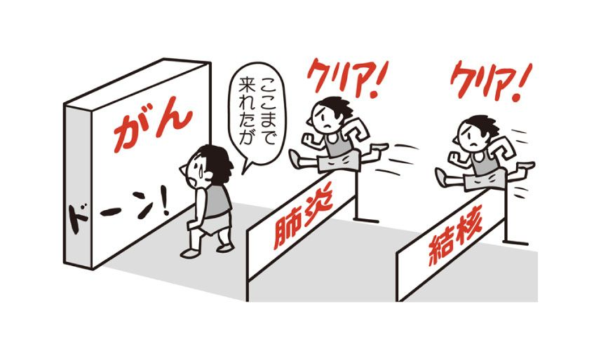
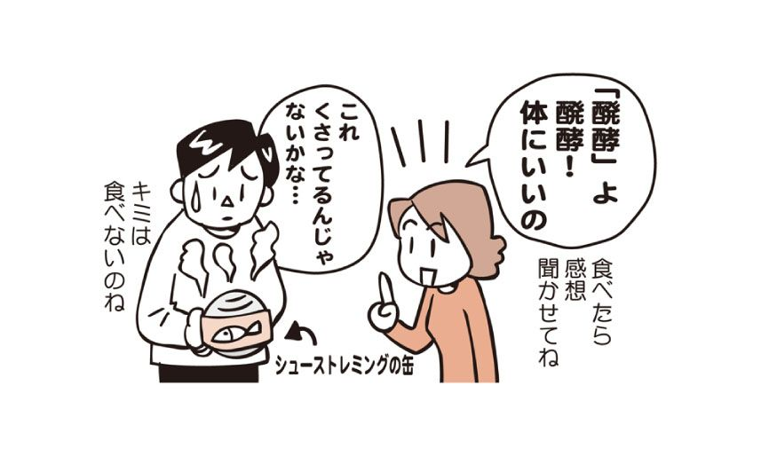
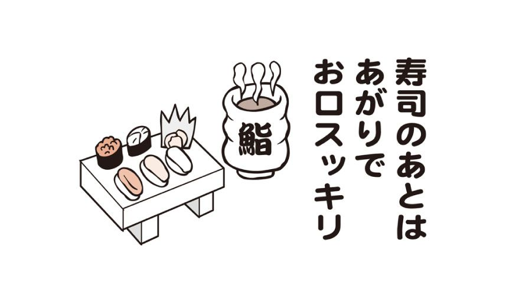
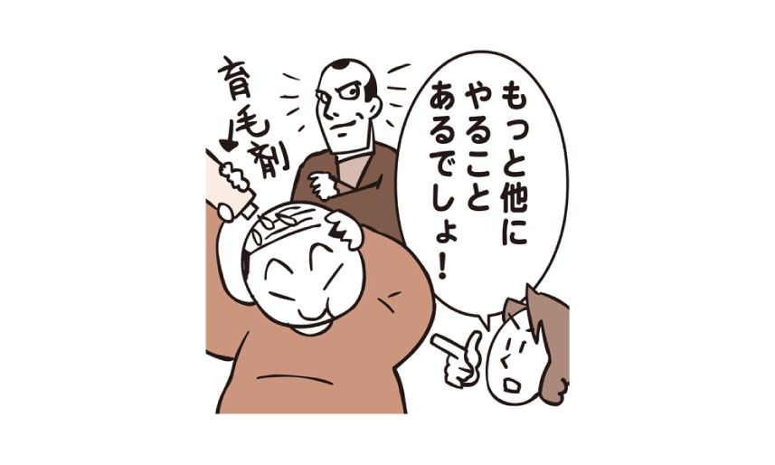
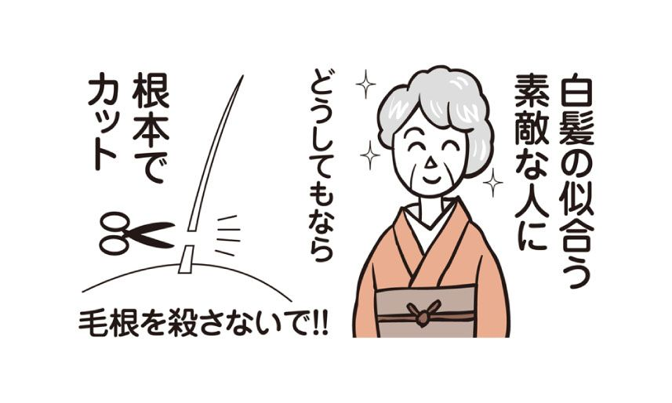

| 病気にならない新常識72 | |
| 秋津壽男 | |
| (2007) | |
病気にならない新常識72
秋津 壽男
（秋津医院院長）
漫画、小説、一般書籍 RAW ZIP RAR 無料ダウンロード http://13DL.NET
この電子書籍は、縦組みの底本を元に作成しました。
はじめに
人はみな健康なまま人生を送りたいと願っています。
無病息災。これに越したことはありません。
人間の体は本来健康に暮らせるようにできています。
しかし、今の生活はあまりに便利になりすぎてしまいました。簡単にたくさんの食べ物が食べられたり、好きな味の物だけ食べられたり、歩かなくてもどこまでも行けたり、何もしなくてもビルの上まで上がれたり、さまざまです。
人間の体は、もっと不便な生活に合わせてできていますから、こんな生活では、少々便利すぎて、いろいろ余分なものが体に入り過ぎたり、余分な物が貯まってしまいます。この余分なものがいろいろ悪さをして、いつのまにか病気になってしまうわけです。
一度病気になってしまってから、健康な体に戻るのは大変なことです。
仕事を休まなければならないこともあります。医療費もかかります。家族への負担もかかります。病気によっては後遺症が残ったり、長期療養を余儀なくされるものもあるでしょう。よしんば順調に回復しても、生涯服薬を続けなければならない病気も中にはあります。病気になど、ならなければ、ならないに越したことはないのです。
健康な人がいきなり病気になることは、あまりありません。
健康な人は、まず「不健康な人」になります。
不健康な人のまま過ごしていると、いずれ病気になってしまうということです。
で、あれば、まず不健康な人になるのを避けましょう。
昨今メタボリックシンドロームが大きく取り上げられ、皆が自分の下腹を気にするようになりました。良いことですね。今の自分が不健康であるということが認識できるようになったわけですから。
自分が健康であるのか、不健康であるのか、まずはそこから見つめ直してみてはいかがでしょうか。
この本には、あなたが日常生活に気軽に取り入れられるかんたんな健康のための秘訣を納めました。人間は毎日のちょっとした気遣かいや意識づけを変えるだけで、ずっと長い間健康なまま暮らしていくこともできるのです。
あれをやらなければ！ これをやらなければ！ としゃかりきになっていても、なかなか続くものではありません。健康の維持にもっとも大切なのは「継続」なのですから、三日坊主では全く意味がありません。
もっと自然に、食べ物を選ぶとき、どちらにしようか迷ったときに、すっと体によいものを選べるようになるだけでいいんです。駅のホームから改札に行くときに、エスカレーターじゃなく階段を何気なく選べるようになればいいんです。お昼ご飯に脂っこいものを食べたら、夕食はさっぱりしたものを選ぶようになる。そんな自然な選択の積み重ねが、10年後の健康を築き上げるのです。
さあ、あなたとあなたの大切な家族が、ずっと病気知らずで元気に暮らせるように、少しだけコツを覚えてみませんか？
秋津 壽男
もくじ
１ 「セカンドオピニオン」は当たり前 複数の医師に相談しよう
２ 長い目で見れば本当の状態がわかる 健康診断のポイントは経年変化
９ 「長寿だからがんになる」 長生きすればするほどリスクは高まる
10 「リスク分散」の食生活が大切 免疫力を高める「雑食」を
17 ビリーズ・ブートキャンプより 朝一番の「ラジオ体操」がいい
18 わざわざトレーニングジムに通う必要なし 日常生活に筋トレ革命を
19 気軽にはじめられるウォーキング しっかり準備して効果的に
21 腰痛の予防・改善は腰周りの筋肉を鍛える まず腰痛体操から始めよう
26 ダイエットは食生活の見直しから 運動だけでやせることは難しい
27 ダイエットのための１時間の運動も １杯のジュースで水の泡
28 危ない〝ブームの痩身法〟 ダイエットの基本は「食と運動」
34 「卵は１日１個」に根拠なし ２個でも３個でも食べてかまわない
35 砂糖を摂るから糖尿病になるのではない 問題はトータルのエネルギー量
36 脂溶性ビタミンの摂りすぎにご用心 サプリメントは賢く摂る
37 コラーゲンを摂るなら「牛すじ」で サプリメントの前に食事を充実
41 和食中心の食生活で 大豆の健康パワーを効果的に取り入れる
42 伝統食の代表そばは粗食にあらず 栄養たっぷりな健康食材
43 豊かなのに深刻な野菜不足 健康のために野菜を１日もう一品
49 戦前・戦中よく飲まれたヤギ乳 その効能は牛乳をはるかにしのぐ
50 空腹時のウーロン茶は体によくない 脂肪の吸収を抑えるには食べ物と一緒に摂る
51 お茶の成分を壊さない「水出し」 食事のときにゴクゴク飲もう
54 贈り物だけでなく自分のために活用する デパ地下は健康食材の宝庫
55 悪いことばかりではない 外食も健康を意識したメニュー選びを
58 緑茶を飲むと口臭が減る カテキンにさまざまな健康効果が
61 美肌保持の「シンデレラタイム」 午後10時から午前２時はしっかり眠る
62 寝覚めの大敵「遮光カーテン」 起きたらすぐカーテンを開ける習慣を
70 チャレンジ精神が脳を活性化 ボケ防止には、頭と手を動かす
企画編集協力 伊吹達也
ブックデザイン 松原 卓（ドット・テトラ）
イラスト Ｔａｎｕ２
編集協力 オメガ社
１ 「セカンドオピニオン」は当たり前 複数の医師に相談しよう
安心のために「第２の意見」を
「他の病院で診察を受けるので、カルテと診断書を出してほしいのですが」
などと言うと、医師が気分を害してしまうのではないかと思うかもしれませんが、そんなことはありません。「セカンドオピニオン」といって、主治医とは別の医師の診察を受け、他の視点によるアドバイスを受けるという考え方が浸透しつつあります。
ひとりの医師に自分の健康のすべてをゆだねる「主治医」という考え方があります。「かかりつけ医」という決まった医師の診察を受けること自体は、患者個人の健康に関して医師が詳しく知るという点では良いことです。しかし、医師も人間ですから、得意な分野も治療経験も異なります。その病気について今の医師が未経験でも、他の医師なら過去に何度も治療したことがあるかもしれません。病気の治療は経験が重要なことも多いですから、これは大きなポイントです。
米国では、医師が診察の終わりに「セカンドオピニオンをとりますか」と、尋ねるのは当たり前のことになっていて、がんの治療で知られるニューヨークのスローンケタリング記念がんセンターには、全米からセカンドオピニオンを求めて多くの患者が訪れます。
とくにがんや心臓病のような治療法が日進月歩している分野では、治療法の選択肢が多岐にわたるため、専門家でもその患者にとってどの治療法が一番良いのか判断が難しく、セカンドオピニオンの必要性はより高くなっています。
セカンドオピニオンは未だ保険適用外
医療保険の改変で最初に診察を受けた病院からの、他院への情報提供に関しては健康保険が適用されるようになりましたが、他院で受けるセカンドオピニオンそのものは、診察ではなくあくまで相談という扱いで自由診療の範疇となり、保険は適用されません。
しかし、たったひとりの医師に頼りきることなく、複数の医師の診察を受け、自分にあった医師にめぐり合う努力をしてみることは、時には有効です。もしその必要性を感じるようでしたら、すぐに行動に移したほうがよいでしょう。
２ 長い目で見れば本当の状態がわかる 健康診断のポイントは経年変化
診断結果をきちんと見ていますか？
あなたの今年の健康診断の結果はどうでしたか？ 「血圧が高い」「中性脂肪の数値が高い」と嘆いている人もいれば、「要再検・要精密」の文字を見て、これは恐ろしい病気かもとおびえている人もいるでしょう。
「異常なし」だった場合でも、それは検査をした時に特別な所見がなかったというだけで、健康が保証されたわけではありません。「自分は健康だ」と過信して、自堕落な生活を送っていては、健康な身体を維持するのは難しいでしょう。
また、「要再検」「要精密」と書かれている人は、早い段階で検査を受けましょう。「要再検」くらいだと「まあいいや」と思ってしまいがちですが、小さな異変が大きな病気につながることもあります。逆に心配しすぎるのも禁物ですから、早めに医師の診察を受けて異常を明らかにし、不要なストレスをためることのないようにしましょう。
健康診断結果をファイルしよう
今年の検査の数値が異常を示していたとしても、１回の健康診断の結果だけでは、正確な判断はなかなかできません。血糖値が正常の範囲内であっても、前年と比べて大きく違っていたり、５年前から増加を続けていたりするのであれば、あなたにとっては異常な数値です。ひょっとすると糖尿病あるいはなんらかの病気である可能性があります。もちろん、それぞれの数字が基準値を超えているかどうかとか、「要再検」がいくつあったということなども重要なポイントです。
たった１回の健康診断の結果だけ見るのではなく、毎年健康診断を受けて数年分の検査結果を見比べ、経年変化を見ることが大切なのです。健康診断の結果が書かれた用紙は、内容をざっと確認するだけで捨ててしまう人がかなりいるようです。
しかし、経年変化をチェックするためにも、毎年の結果を１つのファイルにまとめておくことをおすすめします。何か身体の調子が気になったり、異変を感じたりして病院に行くときに、そのファイルを持っていけば、医師の診断に役立つはずですから。
３ 命にも関わる副作用あり 薬と食べ物の相性を知る
グレープフルーツで薬が効きすぎる
高血圧の処方で降圧剤を出されたときに、主治医から、「この薬を飲むときは、グレープフルーツは避けて」と言われていたのに、すっかり忘れて夕食のデザートにグレープフルーツを１個ペロリ。急に体調が悪くなってしまい、あわてて病院へ。診察を受けると「血圧が下がりすぎ」と驚きの診断が......。
食べ物の成分には、さまざまな因果関係により、薬の効果に影響を及ぼすものがあります。薬を飲んでいる時にそんな食べ物をうっかり食べてしまったら、相性によっては薬が効き過ぎてしまって大変なことも。
すべての降圧剤に当てはまるわけではありませんが、グレープフルーツと血圧を下げる降圧剤（カルシウム拮抗剤）の組み合わせはその代表例。グレープフルーツに含まれるフラノクマリンという物質が、降圧剤が体内の酵素によって分解されるのを妨げる働きをするためにこのような事が起こります。また、それらの場合のグレープフルーツと薬の作用は、同時摂取した場合だけとは限らず、グレープフルーツ果汁を飲んでから10時間後に服用した薬にも影響があらわれたとの報告があり、できればこれらの薬を服用中はグレープフルーツの摂取を、避けたほうがいいのです。
どうしてもグレープフルーツを食べたい場合は、その影響を受けない種類の降圧剤に替えてもらうように、主治医に相談してみるとよいでしょう。ただ、同じ柑橘系の夏みかんやバレンシアオレンジはこのような危険な作用は認められていませんし、ビタミンやミネラルは、グレープフルーツと大差ないのですから、栄養を摂りたいのなら別の柑橘類を食べればよいのです。
他にも危ない組み合わせはある
ほかに食べ物と薬の相性の悪い組み合わせとしては、納豆と血液凝固防止薬（ワーファリン）、パイナップルと抗うつ剤、牛乳と骨粗鬆症治療薬、炭酸飲料と解熱鎮痛剤などがあります。食べ物と薬の関係は現在も研究が進んでいるため、これからもっと新しい事実が判明するかもしれません。
４ 薬は、お茶で飲むべからず カフェインが「悪さ」する
お茶で薬を飲まないで
薬を飲むときに、何で飲みますか？
まずよく聞かれるのが、「薬を飲むときにお茶やコーヒーで飲むのはあまりよくないのではないか」という質問。一方でまったく逆の「お腹に入れば飲み物の種類はなんでもいいのではないか」という質問も。果たして、薬はどんな飲み物で飲むのが正しいのでしょうか。
結論から言うと、薬を飲むときにはお茶やコーヒーで飲むのはダメ、ということなのですが、その理由は「カフェイン入り」の飲料がダメ、ということなのです。カフェインは主に日本茶（緑茶）や紅茶、コーヒー、ウーロン茶などのお茶類に多く含まれています。他にもコーラや健康ドリンクなどにもカフェインは含まれます。ただ、コーラはカフェインがたくさん入ってる飲料のように思われていますが、それはあくまで清涼飲料水の中では、ということで、実際には３５０㎖缶で約45㎎しか含まれず、お茶類に比べるとそれほど多くはありません。
水で飲んでおけば間違いはない
では、なぜ薬をお茶で飲んではいけないのでしょうか。それは、ある種の薬の中には、飲んだ後に胃の中でお茶などに含まれるカフェインと反応して、体に悪影響を及ぼすものがあるからです。ですから、カフェインさえ含まれなければ、本来は薬を飲むための飲み物はなんでもいいのです。
しかし、中には前ページで紹介したグレープフルーツジュースと降圧剤の関係のような、体に同時に取り込まれると危険を及ぼすケースもあります。また、牛乳を飲むと胃の中に膜を作り、薬の吸収を阻害する可能性もあります。
薬を飲むときに、特に水か白湯で飲まなければならないという理由はありませんが、日ごろから水や白湯で服用する習慣をつけておけば、どの薬を飲むときも間違いがありませんから、安心ということなのです。
ちなみに、夏の風物詩である麦茶は名前こそお茶ですが、これにはカフェインが含まれません。麦茶なら、薬を飲むときに用いても大丈夫です。
５ 危険な薬の落とし穴 「飲み忘れ」と「勝手にやめること」
飲み忘れないために工夫を
「前回渡した薬、ちゃんと飲んでいますか？」
と、医者から聞かれてギクリ。
「いや～、つい飲むのを忘れてしまって......」
なんて、苦笑いをした経験はありませんか？
コンプライアンスとは、要求・命令などに従うこと・応じることを意味する英語。医療では、医薬品の服用を規則正しく守ることを「患者のコンプライアンスが良好である」と言い、逆に薬の服用を正しく守らないことを「ノンコンプライアンス」と言います。
医薬品のノンコンプライアンスの一番の原因は飲み忘れですが、糖尿病、高脂質血症、高尿酸血症など慢性疾患の場合は、命に関わる問題になります。
それを避けるためには、自分が飲む薬が「何の薬なのか」「なぜ飲まなくてはいけないのか」「飲まないとどうなるのか」など、その薬の必要性や重要性をあらかじめ知っておくことが大切になります。
それでも飲み忘れてしまうようなら、例えば職場などに薬を持っていかなければいけないときには、お気に入りのケースに入れるだけでも、飲み忘れを防ぐことができます。飲む時間が決まっているなら、携帯電話などのアラームをセットしておくとよいでしょう。
薬を勝手にやめない
また、飲み忘れとは別に、医師の指示なしに勝手に飲むのをやめてしまうケースもみられます。例えばある程度症状がよくなってくると、薬を飲むのが面倒になってしまいます。しかし、医師は投薬の量、期間を病気が治るまでを想定して処方しているので、自分の判断で中止するのは病気の再発につながりかねません。薬の必要性を感じなくなったら、主治医に相談しましょう。仕事などの関係で指示された時間通りに飲めない場合には、自分が飲める時間帯の薬に代えてもらうという方法もあります。一日３回が面倒なら、同様の効果がある一日１回の薬があるかもしれません。医師から処方された薬は、指示にしたがってきちんと服用することが基本なのです。
６ 同じ効果で医療費軽減 ジェネリック医薬品を選ぼう
ジェネリック医薬品とは
みなさんもテレビＣＭなどで「ジェネリック医薬品」という言葉を耳にしたことがあるでしょう。ジェネリック医薬品とは、特許権が消滅した先発医薬品について、特許を持っていなかった医薬品メーカーがその特許内容を利用して製造した、先発薬と同じ成分、同等の効き目がある安価な薬のこと。薬代が削減されると、私たち消費者だけでなく、国家レベルでも医療費の節減が期待できるため、厚生労働省もジェネリック医薬品の使用促進を行っています。
そして、平成18年４月から処方箋の様式が変更となり、新しい処方箋の中にある「後発医薬品への変更可」という欄に医師が署名、または記名押印すれば、患者は薬局で先発医薬品かジェネリック医薬品かを選択できるようになりました。厚生労働省では、平成20年４月から、ジェネリック医薬品が第一選択になる方向で検討を行っています。
平成18年の調査によると、ジェネリック医薬品への変更が行われた場合の薬代は、当初の処方箋通りに調剤した場合の薬代に比べ、34％も安くなったという結果が出ています。しかし、すべての処方箋のうち「後発医薬品の変更可」の欄に医師の署名がある処方箋の割合はたった17％に過ぎず、さらに実際にジェネリック医薬品に変更されたのは、全体の６％だけと、まだまだ普及には時間がかかりそうです。
ジェネリック医薬品の処方はハッキリと
すべての薬にジェネリック医薬品があるかというと、もちろんそうではなく、特許の切れていない薬には、ジェネリック医薬品はありません。
そして、一番の問題は、私たち患者のジェネリック医薬品に対する認識不足です。多くの人たちは「先行医薬品とジェネリック医薬品のどちらを用いるかは、患者が選択できる」という制度を知らないのではないでしょうか。大切なのは、ジェネリック医薬品についての正確な知識を得て、医師にはっきりと「ジェネリック医薬品を使いたい」という意思を伝えること。そうすれば、あなたの医療費はぐんと安くなるはずです。
７ サプリメントの飲み合わせ 間違えると無駄になることも
同時に飲むと良いサプリメント
サプリメントは、最近では通販やドラッグストアだけでなく、コンビニでも売られるようになってきて、日常生活にだいぶ浸透してきました。手軽に不足した栄養素を補給できるサプリメントですが、これが健康にとって実になるか毒になるかは飲み方次第なのです。
サプリメントは大きく、ビタミン系、ミネラル系、アミノ酸系、ハーブ系の４つがあります。そして、サプリメント同士は飲み合わせにより、その効果が高まる場合があるのです。とくに、ビタミンとミネラルたちは相性がよく、一緒に飲むのがよいとされています。これはいわゆる「マルチビタミン・マルチミネラル」という考え方。例えばビタミンＢはそのＢ群をまとめていっぺんに飲むと、体の中での働きがより高まります。また、ビタミンＣは、ビタミンＡ・Ｅ・Ｐとマグネシウム、カルシウムと一緒に飲むことで、それらの栄養素を効率的に体に取り込むことができます。鉄分の吸収効率を高めるにはビタミンＣに加えてさらに銅、コバルト、マンガンといった栄養素を一緒に摂るのがコツです。このように、ただ１種類を飲むのではなく、相乗効果が期待できる組み合わせで飲むことで、より一層の効果が期待できるのです。
しかし、飲み方次第でサプリメントが無駄になることもあります。
例えば、鉄分を補うサプリメントを日本茶で飲むと、鉄分とお茶に含まれるタンニンが結合して鉄分が吸収されにくくなってしまいます。
サプリメントと医薬の相性
サプリメントと相性の悪い医薬品もあります。カルシウム・鉄分を含むサプリメントと骨粗鬆症治療薬を一緒に飲むと、薬の効きが弱まってしまい本来の効果が得られません。青汁・クロレラ・ビタミンK2・ナットウキナーゼとワーファリンなどの抗凝固剤の組み合わせや、グアバ葉系ポリフェノールと糖尿病治療薬の組み合わせでも同様です。
ビタミンＡと抗生物質はひどい頭痛を、ビタミンＤと強心剤は不整脈を引き起こす可能性もあり危険です。病気治療中は、サプリメントの摂取は控えたほうが良いでしょう。
８ ＤＮＡだけじゃない 生活環境ががんを遺伝させる
遺伝する人はごくわずか
「うちは親父もじいさんもがんで亡くなっているから、私もきっとがんで死ぬよ」なんて言っている人はいませんか？
がんの原因としては二種類が考えられます。ひとつは遺伝子に起因する明らかな「遺伝性のがん」。そしてもうひとつは生活環境が原因による「継承性のがん」です。
じつは遺伝子によって遺伝するがんは、乳がん、大腸がん、それと白血病の一種だけ。発症する前でも遺伝子を調べれば、将来それらのがんになるかどうかが判別できます。要するに遺伝子によって遺伝するがんはごくわずかなのです。
しかし、世の中には「がん家系」というものがあります。これは遺伝子による遺伝と受け取られがちですが、じつは同じ家系でがんになるのは、食事などの生活習慣が受け継がれていくために起こるものなのです。例えば両親がそろって肥満で、油っこいものが好きという場合や、あるいはお菓子ばかり食べる家庭だったら、息子や娘も同じように肥満になる可能性が極めて高くなります。そしてその習慣を続けていくうちに、子どもも親と同じような肥満由来のがんになる可能性が高まります。また、大酒飲みの家系で、両親も祖父母もすごくお酒が好きならお酒起因のがんに、さらに両親がヘビースモーカーなら、子どもが受動喫煙で煙を吸い込み、家族全員が肺がんになるというケースもありえます。
子孫のためにも生活習慣の改善を
このようにひとつの家系で同じがんが頻発すると、あたかも遺伝子による遺伝のように思われることが多いのですが、ほとんどが生活習慣によるものなのです。食習慣をはじめとする生活習慣を受け継ぎ、同時にがんのなりやすさを受け継いでいるのです。だから自分の家系からがんの人がたくさん出るようなら、まずチェックするのは遺伝ではなく、生活習慣や食事がきちんとしているか、がんの原因となっているものはないかなど、そちらに気を配ったほうが、がんの予防には効果的です。あなたが生活習慣を改善することで、子孫たちのがんの発生率を下げることができるかもしれないのです。
９ 「長寿だからがんになる」 長生きすればするほどリスクは高まる
がんは老化現象の一種
日本人の死因統計などで、がんで死亡する人が多いのを見ると、なにやら日本はがんになりやすい不健康な社会であるようなイメージをもってしまいます。そしてこれは現代の日本人の生活習慣や食事がいけないのではないか、などと大げさに考えがちです。
しかし、がんで最も危険な因子は「加齢」なのです。がんのリスクは年齢を重ねれば重ねるほど当然高まるもの。つまり長寿国になればなるほど、がん患者は増えて当たり前ということなのです。
もちろん加齢以外でも、がんの因子はいろいろあります。そうした生活習慣をなるべく避けることは効果的です。例えば皮膚がん予防として、日焼けをし過ぎないこと。日焼けサロンで焼いたりするのは論外。お酒も飲み過ぎないほうがいいに決まっています。
しかし生活習慣の改善だけでは、完全にがんの因子を防ぐことはできません。なぜなら、がんは体の「エラー」が重なってがん細胞が生まれ、それを排除しきれないでいるうちに小さながんがだんだん育ち、それが何年、何十年という間に大きくなってしまったものなのです。若いうちはがん細胞を免疫が叩くため、発病することはあまりありません。しかし年をとると免疫力も落ち、どこか弱い臓器から発がんしてしまうのです。つまりがんとは老化の一種とも言え、長く生きれば生きるほど、そのリスクは高くなっていくのです。
昔の人はがんになる前に亡くなった
昔はがんになる人は少なかったと聞きます。しかしそれは、ほとんどの人ががんになる前に結核や肺炎などの別の病気で死んでしまっていたということに過ぎません。
裏を返せば、日本人の死因でがんが一位となったということは、今の日本がそれほど健康で長生きの国になったということです。日本人の三大死因はがん、心臓病、脳卒中ですが、どれも高齢者に多い病気であり、そのどれかでほとんどの日本人が亡くなるのですから、その他の病気で死に至ることは少ないということです。がんの死亡者数や割合が多いからといって、特別にがんだけを怖がることはないのです。

10 「リスク分散」の食生活が大切 免疫力を高める「雑食」を
発がん性物質も少量なら怖くない
仮に発がん性物質を含む食材だとしても、それが少量であれば特別気にする必要はありません。魚の焦げた皮を食べるとがんになるなどと言われていますが、それだけでがんになるとしたら、毎日相当な量を食べ続けなければなりません。普通の食生活であれば、多少の焦げ付きなど気にする必要はないのです。
逆に、発がん性物質がほとんど含まれていないからと言って、同じものばかり食べ続けることは禁物です。同じものばかりを大量に摂取するということは、栄養のバランスを崩してしまうだけではなく、がん予防の観点からもよくありません。
例えば毎日同じ食品ばかりを食べていたとします。そして将来の研究の結果、そのよく食べていた食品の中に発がん性物質が見つかったという場合、発がんのリスクは非常に高かったことがあとでわかります。ひたすら進んで発がん物質ばかりを溜め込んでいたわけですから、とてもリスクの高い行為だったということになります。
リスク分散のためにいろいろなものを食べる
そのように同じ食べ物、同じ成分ばかりを摂り続けるということは、そうした大きなリスクを伴う行為なのです。資産運用などの話でよく「リスク分散」という言葉を聞きますが、食事でもさまざまなリスクを分散させるという意味で、幅広くいろいろなものを食べることで、大きなダメージを受ける危険性を減らすことができます。
人間、一度に食べる量はだいたい決まっているわけですから、毎日の食事の際に食材一つひとつの量を減らし、食べる食材の種類を多くして、いろいろなものを少しずつ食べるようにします。こうしておけば、仮にその中に発がん性の物質が含まれていたことがわかったとしても、食べていたのが少量ですから問題はないというわけです。栄養面では「一日30品目」を食べるとよいと言われています。いろいろなものを食べることで、偏りなく栄養成分を摂ることができ、体の免疫力を高めることもできるのです。
11 「笑い」ががん細胞を退治 医学的にも立証された効果
笑いに隠された力
極度なストレスやうつ状態で免疫力が下がることが実証されているなら、逆に笑うことで免疫力が上がるのではないか？ 笑いと健康の関係は、そんな発想の転換をきっかけに昭和50年代後半よりアメリカで本格的に研究されるようになりました。そして現在、笑いが私たちの健康に多大な好影響を及ぼすことがさまざまな研究によって明らかになってきています。
私たちの体内には、リンパ球を中心にしたＮＫ細胞（ナチュラルキラー細胞）・Ｔ細胞・Ｂ細胞・マクロファージなど数十種類の細胞があり、お互いが綿密に情報を交換しながらウイルスや細菌などの侵入を阻んでいます。それらの細胞は、人が落ち込んだり憂鬱な気分だったりすると働きが低下し、逆に笑っているような楽しく愉快に過ごしているときは戦う力が強くなるということが研究によって実証されています。特にＮＫ細胞はがん細胞を破壊する細胞であり、笑いが健康におよぼすもっともよい影響の一つとして注目されています。大声で笑わなくとも、笑顔を作るだけでも効果があります。笑顔はＮＫ細胞を活性化するということも明らかになっています。
笑う門には健康来る
また、笑いにより交感神経と副交感神経のバランスの状態が代わり、副交感神経が優位の状態になることも、大きなポイントのひとつです。副交感神経は、安らぎや安心感を感じた状態のときに優位となり、副交感神経が優位な状態が続くとストレスが解消されていきます。さらに、笑うことにより、強力な鎮痛作用をもつエンドルフィン（脳内麻薬）という神経伝達物質が増加し、痛みを和らげることも証明されています。
いつも笑顔でいると、目尻などの笑いじわが気になるという人もいるかもしれませんが、笑いのパワーで免疫力が高まり、体の中から元気になってくれば、逆に肌に張りがよみがえり、全体のしわがとれてくるもの。美容の世界でも笑顔はアンチエイジングの重要なファクターです。それに、いつも楽しく笑っていればストレスも溜まりませんから、笑いはいいことづくめなんです。
12 ピロリ菌が胃がんを引き起こす 50歳以上の方は要注意
ピロリ菌を自ら飲んでノーベル賞
ピロリ菌（ヘリコバクター・ピロリ）は慢性萎縮性胃炎、胃潰瘍や十二指腸潰瘍、そして胃がんの原因と考えられています。胃がん患者のピロリ菌感染率はなんと94％。ピロリ菌感染者が胃がんにかかる確率は、そうでない人の実に5.1倍にもなるという調査結果があります。これはもはやピロリ菌と胃がんの関係は否定できるはずもなく、胃がん撲滅のためにピロリ菌の研究が注目されています。
ピロリ菌の生息地は胃です。大きさは２～３×０.45マイクロメートル（１マイクロメートル ＝１０００分の１ミリ）で、数本のしっぽがあり、らせん型をしています。昭和58年 オーストラリアのロビン・ウォレンとバリー・マーシャルにより発見されました。このふたりは、ピロリ菌発見の功績が認められ、平成17年にノーベル医学生理学賞を受賞しています。この発見では、驚くべきことにウォレン氏が発見した胃の中に住むピロリ菌を、マーシャル氏が自ら飲んで急性胃炎になり、彼らの研究の正しさを証明したというのです。
日本人中高年の70～80％は感染者
ピロリ菌がノーベル賞を受賞するほどの重要な細菌と聞いてもすぐにはぴんとこないかもしれませんが、じつは我々にとってとても身近な存在なのです。
ピロリ菌感染者は、上下水道が整備されていない国や地域に多く見られます。ところが、先進国の日本でも50歳以上の70～80％がピロリ菌の感染者。一般的に、ピロリ菌は子供の頃に経口感染します。日本の中高年に多いのは、幼少時に井戸水を飲用していたためと考えられています。一方、10～20代では15～25％と他の先進国の若年者感染率と同程度です。
ピロリ菌の検査には、内視鏡を使って直接胃の組織を調べる方法と、呼気（吐く息）を採ってその中に含まれている二酸化炭素を調べる方法、血液や尿で抗体をみる方法の３つがあります。それほどの手間はかかりませんし、もし胃・十二指腸潰瘍と診断された患者さんは健康保険が適用されます。少しでも気になるようであれば、ぜひ一度検査してみることをおすすめします。
13 コーヒーに病気予防効果あり ブラックコーヒー健康法
コーヒーが体にいいことがわかってきた
コーヒーは世界中の人々に親しまれている嗜好品ですが、特に日本は、アメリカやドイツに次ぐ世界第三位の輸入国であり、コーヒーは飲料のひとつとなっています。かつて、コーヒーを飲むと興奮し過ぎる、刺激が強い、胃に悪いなどの悪評がありました。
ところが最近、コーヒーが糖尿病予防に効果があるという報告が出てきました。例えば米国医師会雑誌平成17年７月６日号で、オランダの研究グループが１万７０００人を７年間にわたって追跡調査した結果を明らかにしたのです。それによると、コーヒーを一日７杯以上飲む人は、２杯までしか飲まない人に比べて、糖尿病にかかる割合が50％も少ないことを突き止めました。その他にアメリカやフィンランドの大規模調査でも、糖尿病の発症率が低いということが判明しました。またスウェーデンでは、コーヒーがインスリン感受性を高め、糖尿病予防に役立つ可能性があることが報告されています。
日本においても、九州大学の研究グループが、コーヒーは食後の血糖値上昇を抑制し、糖尿病予防の可能性があると報告しています。
ただし、実際に糖尿病になってしまったら、コーヒーはまったくの逆効果。コーヒーに含まれているカフェインと糖が反応して、糖尿病を悪化させるという報告があるほどです。予防に効くからといって、治療にも役立つとは限りません。
健康のために飲むならブラックに限る
糖尿病予防以外にも、コーヒーにはダイエット効果、動脈硬化や高血圧・がん・老化の予防、コレステロール値低下、ストレス緩和などの健康効果があることがわかってきました。厚生労働省の調査では、コーヒーを常飲する人は肝がんの発症リスクが50％、女性の場合大腸がんの発症リスクが30％も低いことがわかりました。
健康のためにコーヒーを飲むなら、あくまでブラックコーヒーがおすすめ。クリームや砂糖を入れると、別のリスクが上がってしまいます。胃を傷めるのでブラックコーヒーが苦手という人は、少量の牛乳を入れることをおすすめします。
また、健康によいからといってあまりにも飲み過ぎると今度は心筋梗塞や脳梗塞、関節リウマチになる確率が高くなるので、飲む量はほどほどに。食後や休憩で１日３杯～５杯程度が適量でしょう。
14 常習喫煙は「病気」です タバコはニコチン代替療法でやめる
百害あって一利なし
最近のタバコの箱には体に悪いという警告があちこちに印刷されているため、「ああ、そろそろ辞めようかな」と思っている人も少なくないことでしょう。しかし、禁煙を試みても数日後には、つい一服。また禁煙できなかったな、とため息の繰り返し。
体がニコチン依存症になっていると、体内のニコチン濃度が低下してくるとイライラを感じ、いくら頭で禁煙しようと思っていても、次のタバコがどうしても吸いたくなってしまいます。こうなると意思の力だけでは辞められないわけで、これはもはや治療が必要な病気です。
いまさらタバコの害についてはいうまでもありませんが、ニコチンはアドレナリンを生じさせ、血行を悪くし、煙の中の一酸化炭素は血液中のヘモグロビンと結びついて体中の器官に酸素不足・栄養不足をもたらします。タールは肺にたまり肺がんの原因になり、取り込んだ煙は血管を収縮させて脳梗塞や心筋梗塞を引き起こします。まさに百害あって一利なし。
治療に保険が適用される
タバコがやめられないのはニコチン依存のせいですから、とにかくニコチンだけ摂取できれば、タバコを吸わずに済みます。そうすれば、タールや煙を取り込むことがなくなります。そうしてから徐々にニコチンの摂取量を減らしていけばやめられます。
タバコ以外のニコチン摂取法として、ニコチンパッチが用いられます。これがニコチン代替療法です。とくにニコチンパッチは平成18年６月から保険適用になりました。ニコチンパッチは皮膚からニコチンを吸収させ、依存症状を和らげます。パッチのサイズを段階的に小さくして、体に取り込むニコチンの量を減らしていき、徐々に体を慣らしていくことで禁煙を達成するわけです。パッチのほかにニコチンガムを使用する方法もありますし、飲み薬も近く承認される見込みです。
禁煙に必要なのは、喫煙という習慣を断ち切ろうという強い意思が第一ですが、ニコチン代替療法がその意思を手助けしてくれる時代になってきたのです。
15 突然死を招く不整脈は 心室細動型がハイリスク
不整脈が出たらまず医師に相談する
数年前、高円宮殿下がスカッシュの途中に突然死したことがありました。これは不整脈が原因だったと伝えられています。不整脈の原因は、じつはまだよくわかっていないことが多く、心臓そのものに病気があって起こる場合もあれば、何も異常が発見されないのに不整脈になる人もいます。そのため不整脈がわかった場合は、まず医師に相談して、治療すべきかどうか診断してもらうことが大切です。
心臓を自動車のエンジンに例えると、規則的な排気音ではなく、ガタガタと不規則な音のするのが不整脈。放っておいても平気な場合と、すぐに修理してもらったほうがいい場合がありますが、いずれにしてもプロの検査が必要です。
一言で不整脈と言っても、すぐに命に関わるような危険な不整脈と、とりあえず放っておいても大丈夫な比較的問題のない不整脈とがあります。心臓は心房（上側）と心室（下側）に分かれていますが、そのうち心房で発生する不整脈は、「心房細動」と呼ばれ、不整脈が起こっても心臓はそのまま動き続けるので、いきなり生命の危機に直結することはあまりありません。ただ、血流がよどんでしまい、血液の塊ができ血栓となって脳などの毛細血管で詰まって他の病気を引き起こすこともありますので、治療は必要です。
高円宮殿下のケースは心室の不整脈
一方、心室から出る不整脈は、「心室細動」と呼ばれ、まれに突然死することがあり、放っておくと非常に危険です。先に述べた高円宮殿下のケースは、この危険な心室からの不整脈だったそうです。
しかし、自分の不整脈が心房から出ているのか、心室から出ているのかといった判断は自分ではわかるものではありません。不整脈が出たら、まずその原因を確かめる意味でも、病院で検査を受けておきましょう。
一日に不整脈が頻繁に起こる、二連発の鼓動が何回かある、三連発が一回でもある、何箇所かからいろいろなタイプの不整脈が出るなど、これらのどれか一つでも該当するようなら、すぐに医師に相談して治療を受けたほうがいいでしょう。
16 脳卒中発症後６時間が生死を分ける 「超特急」で救急病院に
脳卒中には三種類ある
脳卒中は突然襲ってきます。生命の危険はもちろん、後遺症が残り介護が必要になると家族に多大な負担がかかるなど、それまでの生活を一変させてしまうほど怖いものです。
一言で「脳卒中で倒れた」などと言いますが、脳卒中には大きく分けて「脳梗塞」「脳出血」「くも膜下出血」の３種類があります。かつては脳出血が大半でしたが、１９７０年代からは、脳梗塞が約６割まで増えてきました。
脳梗塞とは、凝固した血液の固まり（血栓）が脳の血管に詰まって血行を妨げることで、酸素や栄養が脳に行き渡らなくなってしまうもの。酸素が届かなければ脳細胞は死んでしまいます。
血栓でフタがされてしまった血管を元通りにするには、薬を投与して、血栓を溶かしてしまう方法があります。今はｔＰＡ（組織プラスミノゲン活性化因子）やｒｔ-ＰＡ（アルテプラーゼ）というような、投与の効果が期待できる最新の血栓溶解薬が治療薬として導入されつつあります。しかし、ｔＰＡやｒｔ-ＰＡなどの薬は作用が強く、副作用として脳出血を起こす可能性が指摘されていることから、使用に制限が設けられていて、まず、発症後３時間以内に治療をはじめることができない状況では使えません。また、患者の病歴やＣＴ検査の結果によっては、使用ができないこともあります。これらの薬を使うためにも、できるだけ早く患者を病院へ連れて行く必要があるのです。
タイムリミットは６時間
脳卒中で倒れたときに、生死を分けるのが発症後４～６時間以内の治療で、これをゴールデンアワーと呼んでいます。しかし、後遺症をゼロにするためにはさらに迅速な治療が必要ですし、治療までの準備や診察の時間を考えるとできるだけ早く病院へ連れて行かなければなりません。実際に家族に発作が起きたときは、一分一秒を争って救急車を呼び、救急病院に運ぶことが大切なのです。
予兆として、手足のしびれ、しゃべりにくい、足がもつれる、よだれが出るなどの症状がありますので、普段から症状に注意して早期発見できるようにしておきましょう。
17 ビリーズ・ブートキャンプより 朝一番の「ラジオ体操」がいい
ブートキャンプはキツい
健康維持のための運動はいいことです。でもどんな運動をしたらいいのかわからない、そんな人も多いのではないでしょうか。
今はダイエットや健康増進を目的にした、いろいろなプログラムが用意されています。アメリカのビリー・ブランクスが考案しつくり上げた「ビリーズ・ブートキャンプ」は今や日本でも一大ブームを巻き起こしていますが、もともとは米国陸軍などで新兵の基礎体力育成のために行われた特殊な軍隊式の基礎トレーニングを元にしたものです。若いならいざ知らず、日ごろ運動習慣のない中高年がいきなり飛びついても、ハードすぎてかえって体を傷めかねません。
ラジオ体操ではメリハリをつけること
そこでぜひおすすめしたいのが、日本で長く親しまれているラジオ体操です。ＮＨＫラジオ第一では午前６時30～40分まで放送され、ラジオ第二でも８時、12時、15時台の三回放送しています。もしラジオで聞けなくてもＣＤが安価で手に入ります。
ラジオ体操はうまく考えられていて、１曲やりきるだけで、汗まではかかないものの体がほどよく温まるぐらいの運動量で、全部の筋肉をバランスよく使うようにつくられています。しかもお金もほとんどかからないとくれば、気軽に始める運動としてはうってつけです。
ラジオ体操というと、夏休みの朝に近くの広場や学校でやっているものというイメージがあり、子ども向けの軽い体操と思うかもしれませんが、40歳以上の体にはなかなか大変で、実際やってみると結構きつく感じるものです。ラジオ体操をやるときに大事なのは「のばすところはのばす」、「ちぢめるところはちぢめる」というメリハリ。これを意識すると、より効果的です。
ラジオ体操になれて、運動として物足りなく感じるようになったら、次のステップとして縄跳びや水中歩行、ストレッチ、それからジムなどに通うことを考えればいいのです。まずは、とりあえず誰でも知ってるラジオ体操からやってみる。要は生活に運動を取り入れる習慣をつけることが大切です。
18 わざわざトレーニングジムに通う必要なし 日常生活に筋トレ革命を
人は本来運動する生き物である
ひたすら走り続けたり、グイグイとダンベルを持ち上げ続ける。運動といえば、このようなことを思い浮かべる人が多いのではないでしょうか。しかし、無理に「トレーニングをするぞ！」などと考えなくても、人間はもともと生きていくために狩猟を行っていた「歩く動物」だったのですから、日常でも意識して身体を動かすだけで、十分に筋肉をつけることができるはず。日常生活の中でもっと運動を意識してみましょう。例えば、毎日の買い物に歩いて出かける。駅やデパートで、なるべくエレベーターやエスカレーターを使わずに階段を上り下りするなどです。こんな程度のことでも、実際にやれば十分に運動していることになります。
普段からエレベーターばかり使ったりして、楽をしよう楽をしようとするので、どんどん体が鈍ってしまうのです。
家事で鍛えるなら普段使わない筋肉を使う
あなたが主婦ならば、家事に気合いを入れるのもいいでしょう。洗たくや布団の上げ下ろし、浴槽洗いなども、手を抜かずに体を動かす意識をもってやれば十分な運動になります。主婦はデスクに座りっぱなしのサラリーマンとは違って、日常生活で結構動いているのです。ただ、家事の場合は、使う筋肉が限られていて偏っているため、肩こりや腰痛になりやすいので注意しなければなりません。家事で「トレーニング」をするならば、なるべく普段使わない筋肉を使ってやるように心がけましょう。半分に切ったサンダルで足に負荷をかけて家事をする健康法がありましたが、ああいった工夫もいいですね。
また、あなたがサラリーマンで電車通勤をしているなら、車内ではつり皮にそっと触れる程度にして、人知れずつま先立ちしたり、自力で踏んばったりしてみてください。電車は常に揺れているので、とてもいいトレーニングの場になります。
このように、運動とは特別なものばかりではありません。そもそも体を動かすこと自体が運動ですから、日常生活の中で意識して体を動かすようにすれば、健康増進には十分な効果が得られるのです。
19 気軽にはじめられるウォーキング しっかり準備して効果的に
やるなら正しい方法を身につけてから
「運動をはじめよう！」と思ったとき、気軽にはじめられるのがウォーキング。歩くだけですから、特別な技術はいらないですし、お金もまったくかかりません。ｉＰｏｄなどで音楽を聴きながら、公園をのんびりと歩く姿を想像して「なんかおしゃれでカッコイイ」なんて思う人もいるでしょう。
しかし、運動として「ウォーキング」をしようと思うのなら、それなりの準備をして、正しい方法を身につけたほうがよいでしょう。もちろん、ただ「歩く」というだけでも、やらないよりははるかにマシ。しかし、ちゃんと「ウォーキング」をしたほうが、より大きな効果を得られるので、結果的に楽しみややる気が増し、長く続けられるはずです。
靴とウェア選びは慎重に
用意するものとして、まずは靴があります。高価なハイテクシューズは必要ありませんが、足首やひざを傷めないためにも、できれば足裏のクッションが柔らかい、ジョギングシューズやリハビリシューズのような靴を準備しましょう。大切なのは自分の足に合ったものをじっくり選ぶこと。自分に合わない靴では、けがの原因になります。
次にウエアですが、通気性や保温性を考え、気候や体調に合わせて選ぶことが重要です。サウナスーツなどで歩いている人をよく見かけますが、脱水症状が現れる危険もあります。健康目的であれば、そこまでは必要ないでしょう。ジャージなどのスポーツウェアが無難でしょう。
そして、歩くときはできるだけ荷物を持たないように。荷物を持つ場合は、両肩で背負えるディバッグを用意して。片方の腕や肩だけで荷物を持つと、バランスを崩してけがの原因になってしまいます。
うまくウォーキングができるようになるまでには、少し時間がかかるかもしれません。しかし、正しい姿勢で歩いていくと、だんだん疲れにくくなってくるはずです。ただ、うまく歩くことばかりに集中してもダメ。楽しもうとする気持ちを忘れず、リラックスして歩くことも大切なのです。
20 １日１万歩のウォーキングで 身も心も健康に
１日１万歩を目標に
１日に歩くとよい長さの目安は、時間で言えば60～90分、歩数なら１万歩と言われています。最近はパソコンと連動できる万歩計なども売られているので、利用してみてもよいでしょう。
しかし、ウォーキングで消費されるカロリーは意外に少ないもの。成人男性が60分歩いて消費されるカロリーは、せいぜい３００㎉くらいです。「それならやる意味なんてないじゃないか」と思う人もいるかもしれません。しかし、カロリーの消費量が多くないからといって、無駄というわけではありません。ウォーキングには足の先から頭のてっぺん、全身の隅々まで酸素と血液を巡らせてくれる効果があるのです。
ウォーキングが脂肪を燃焼させる
ウォーキングは比較的軽い運動なので、大きな負荷をかけずに心肺機能を高められます。有酸素運動を行うことで、心臓や肺の働きがよくなり、新鮮な血液を全身に送り出すことができるようになるのです。
また、全身に血液を循環させるには心臓に負担がかかります。とくに、心臓から遠い足は、血流が悪くなりがち。しかし、足の筋肉には血を送るためのポンプ機能があります。ウォーキングをすることで足の筋肉が血流を促し、血行をよくします。
ウォーキングで体内に取り入れられた酸素は、体内に蓄積している脂肪やグリコーゲンを燃焼させてくれます。また、ウォーキングを続けて筋肉が少しずつついてくると、それに併せて基礎代謝量も増え、さらに脂肪燃焼が助長されるようになるのです。さらに、新鮮な酸素を脳にもどんどん取り込むことができます。もちろん血流も活発なので血液量も増加。脳の働きも活発になっていくのです。
ほかにも、生活習慣病の予防、ストレス解消、美容など、いろいろな効果が期待できます。「こんなに良いことがたくさんあるんだ」と思えば、やる気もぐーんとアップするはず。さっそく今日から歩いてみましょう。
21 腰痛の予防・改善は腰周りの筋肉を鍛える まず腰痛体操から始めよう
腹筋と背筋を鍛えて腰痛予防
成人男性で最も多くの人が悩んでいるのはものの一つが腰痛。腰痛は腹筋と背筋が年々衰えてくるとともに、腰椎への負荷が高まって発症することが多く、ビール腹になるとさらに負荷が高くなっていきます。腰痛が悪化すると運動どころではなく、ウォーキングもままなりませんから、さらに肥満は進み、まさに悪循環です。
腰痛を予防、改善するには腰の周りの筋肉を鍛えて維持するのが一番です。つまり腹筋と背筋ですが、ここが鍛えられれば腰痛は治まり、腹周りはひき締まるのでメタボリック症候群も改善されて一石二鳥です。腰痛が軽減されれば、ウォーキングなど別の運動にもチャレンジできるわけですから、腰痛が気になって運動できないひとは、まず腰痛体操などからチャレンジしてみるといいでしょう。
腰痛体操の基本は、まずゆっくりストレッチで体をほぐし、次に腹筋に負荷を、さらに背筋に負荷を加えていくという３つのステップ。ボディビルではないので、決して無理をせずじっくり30分ぐらいかけて行います。毎日やるのが基本です。
気負わず日常生活にとり入れる
腰痛体操は、マットや布団などの柔らかいところでやると腰によくありません。畳や板の間などで行いましょう。また、反動をつけたり他人に押してもらうのも、体を痛めるばかりで効果薄です。体操をして体が痛むようなときは無理をせず中断しましょう。
テレビを見ながらのんびりやったり、職場で休憩時にやったりできるので、あまり気負わずにさりげなく日常に組み込んでいくとよいでしょう。お風呂に入りながらのんびりやるのも、半身浴を兼ねられて一石二鳥かもしれません。
ただゴロリと休むところに腰痛体操などの軽い運動を組み込むことです。これで徐々に体ができていけば、いずれは軽やかに動く健康な肉体が出来上がるでしょう。まずはストレッチから。今すぐやってみましょう。
22 生活活動と運動を積み重ね 一週間単位で目標を立てる
運動や日常動作を数値化
「最近お腹が出てきたなぁ。よし、運動でもするか！」と、いきなり激しい運動をはじめようとしても、長続きできすに辞めてしまうことが多いものです。仕事が忙しくて二、三日運動ができなかっただけで「続かなかったから、もういいや」と思ってしまう人も多いでしょう。
そういう人におすすめなのが、運動量を１週間のトータルで考える方法です。
厚生労働省は、糖尿病など運動不足が原因で発症しやすい生活習慣病を抑えるため、日常生活に運動を取り入れる目安となる「エクササイズガイド２００６（健康づくりのための運動指針２００６）」をまとめ、公開しました。この中には、運動強度とそれにかける時間を併せ考えて作られた「１エクササイズ」という単位があります。まず「ただ座っている状態」を「１メッツ」という単位に定め、歩けば３メッツ、走ったら７メッツなどと運動の強さを割り出し、それぞれの運動に継続する時間をかけて表したものが「エクササイズ」です。例えば軽いジョギング（６メッツ）なら10分で１エクササイズ、水泳（平泳ぎ・10メッツ）なら６分で１エクササイズになります。運動だけでなく日常生活の動作もメッツで算出されていますから、これらもエクササイズに換算できます。
一週間で23エクササイズ
このように生活や運動をエクササイズという単位に換算していきます。健康を維持するためには、１週間のトータルで23エクササイズの運動を行うとよいとされています。
１週間のトータルですから、忙しくて運動を出来ない日や、天気の悪い日があっても、自分なりに無理のないペース配分を考えることができます。
１週間で23エクササイズという目標は、歩いたり家事をしたりという日常生活の活動量も加えての数値です。ということは、運動をする時間があまりとれなくても、日常生活で意識してちょっと身体を動かすだけで、目標とする運動量を達成することができるわけです。あなたの今の生活は何エクササイズですか？
23 運動のあとにストレッチを しっかりやるのが効果的
ストレッチで体をメンテナンス
健康増進のためでも、ダイエットのためでも、運動は継続が命。少しやって体を傷めてしまったのでは、とても続けられません。そこで、運動をしたあとはしっかり「ストレッチ」を行って、メンテナンスをしておきましょう。
ストレッチとは、反動やはずみをつけないで、ゆっくりと腱や筋肉、関節を伸ばし、体をやわらかにほぐす体操のこと。これを「静的ストレッチ」といいます。静的ストレッチは筋肉のこわばりや緊張をやわらげ、関節の動きをスムーズにします。また、血液やリンパの流れを促進するので、脳の活動を活発にし、心身の疲労回復を促します。その結果、リラックスするとともに、気持ちも明るくなります。さらに、適度な刺激を与えられた筋肉に張りが出て、脳や心身の活性化との相乗効果により、老化予防にも役立つのです。
クールダウンは必ずする
ストレッチには、運動前のウォームアップと、運動後のクールダウンがあります。
ウォームアップは血流量を増やし、体温を高め、体を動かしやすくするために行います。ケガの予防にもなるでしょう。しかし、もっと大切なのは、じつは運動後に行うクールダウンのストレッチ。腱や筋肉をほぐすばかりでなく、心肺をはじめとする身体の各機能を徐々に運動状態から通常状態に戻して、めまいや失神、あるいは心停止を予防したり、疲労物質を除去して、疲労回復を早める効果もあります。ウオームアップを忘れても、クールダウンは必ずやりましょう。
ストレッチは器具も専用の場所も必要がなく、気軽に簡単にできますから、日常生活の一部としてぜひ採り入れたいもの。適度に暖かな場所でゆっくりと行うこと。腱や筋肉を静かに伸ばし、ほどよく緊張している状態を20～40秒間維持します。その動作について徐々に強度を増してゆき、痛みを感じるようになったらストップする。少なくとも２、３種類を組み合わせ、息を止めることなく自然な呼吸で繰り返します。もちろん、２回や３回で効果が出るものではないので、習慣にして日々行うことが大切なのです。
24 水は体が欲するだけで十分 無理に大量に飲む必要はない
運動中はこまめに水分補給を
水を飲むことを勧める健康法やダイエット法がたくさんありますが、尿酸値が高く結石や痛風の予防のため１日２リットルと決めて水を飲んでいるならともかく、健康な人であればそんなに飲む必要はありません。野菜、煮物、ご飯、味噌汁と、普段食べている食事にもしっかり水分が入っています。さらに食前食後にお茶を飲んだりすれば、そうそう脱水症状などにはなりません。日常生活の中で水を飲むのは、のどが渇いたなと思ったときで十分です。
ただし、極端に汗をかく仕事や活動をしている人は別。鉄工所などで働く人や、スポーツ選手などは食事以外でも出た分だけこまめに補給する必要があります。この場合は水だけではなく、塩分も同時に補給することが大切です。ただの水よりはスポーツドリンクなどのほうがよいでしょう。運動中は普通よりも脱水症状が起こりやすいので、のどの渇きを感じる前に定期的に水分を補給して予防しましょう。
むやみに水分を摂り過ぎると、血液が薄くなって貧血になりやすく、栄養の消化吸収がさまたげられます。また、冷え性を招きやすい「虚体質」になってしまうとも言われています。
水の種類にはこだわる必要なし
最近では飲む水の種類にこだわる人も増えてきました。コンビニでも軟水や硬水などさまざまな水が販売されていますが、水分補給という点では、水の種類に違いはありません。火山国である日本は、火成岩の地層が多く、地下水のほとんどがミネラルの少ない軟水。軟水は、日本人にとって飲みやすい水です。硬水は、確かにカルシウムやマグネシウムなどのミネラルが多いのですが、軟水に慣れている日本人が飲むと下痢を起こしやすくなります。しかし、慣れてしまえば水分補給源としての両者に性能の違いはありません。
最近では、バッグに水やお茶の入ったペットボトルを持ち歩いている人が増えています。通勤の途中や、外出中にちょっと一息入れたら、さっと取り出してひと口の水分補給。これだけでも体はだいぶ潤うと思いますよ。
25 足のむくみは運動で取れる 予防は減塩が効果的
長時間の同じ姿勢はむくみの原因
血液を含む水分は、血管とリンパ管を通って体内を循環しています。この血管とリンパ管の流れが悪くなり、血液やリンパ液が滞ってしまうことが、むくみの原因のひとつになっているのです。
毛細血管に入った血液やリンパ液は筋肉の力で体中を流れています。運動をするなどして筋肉を動かすと、血管やリンパ管に圧がかかり、体液が動くという仕組みです。逆に言えば、「筋肉を動かさなければむくんでいく」ということであり、ずっと座って仕事をしていたり同じ姿勢でいると、足がむくんでくるわけです。
また、加齢とともに筋肉が衰えると、むくみが起きやすくなります。だからといってわざわざジムに通って筋トレをする必要はありません。普段バスに乗って買い物に行っているのを自転車にしてみたり、時間があれば歩いてみたりしてみるなど、「筋肉を動かそう」と意識するだけで十分に効果が期待できます。即効性を求めるなら、爪先立ちや足踏みをするとよいでしょう。それだけで体液がどんどん体をかけめぐってくれます。
朝起きて顔がむくんでいたなら、我流でいいので顔をマッサージしてみてください。筋肉を緊張させて血管やリンパ管をギュッと圧迫することが大切です。また、体温が低くなると、血液の循環が悪くなり、リンパの流れも影響を受けます。ストレスが自律神経に悪い影響を与え、そのために血流が乱れ、リンパが流れにくくなるということもあります。毎日の生活に軽い運動を取り入れ、筋肉がほぐれて代謝をよくしたり、ストレスを発散してむくみを除去しましょう。
減塩でむくみの半分は解消
むくみの起こる原因のひとつに、塩分の摂りすぎがあります。現代人は一日の目標塩分摂取量10ｇ未満に対して、12～13ｇの塩分を摂取していると言われています。塩分を摂りすぎると体内の塩分濃度のバランスが崩れ、体が過剰に水分を要求するようになり、それがむくみの原因となります。食事だけでなく間食にも気をつけて減塩を意識すれば、むくみの原因の半分は解決してしまうのです。
26 ダイエットは食生活の見直しから 運動だけでやせることは難しい
運動でダイエットするのは困難
お腹の脂肪が気になり始めた人が最初に考えるダイエット方法は、やはり運動。貯まってきたのなら、支出を多くしてバランスを取ろうと考えてしまいがちですね。しかし、運動でのダイエットは苦労の割にあまり効果が期待できないのです。
肥満の解消方法は、今も昔も食べる量（とるエネルギー量）を減らすか、運動量（使うエネルギー量）を増やすか、そのどちらかしかありません。摂る量を使う量が上回れば、当然貯まっているものは減ってきます。
問題は、摂る量を減らすことを考える前に、使う量を減らすことを考えてしまうこと。汗をかいて一生懸命運動すれば、いかにも「ダイエットしています」という気持ちになりますが、そこに落とし穴が。じつは運動によるダイエットは、想像以上に効果薄なんです。
例えば、ジョギングの消費カロリーは「体重（㎏）× 距離（㎞）」で算出できるのですが、ジョギングだけで体脂肪１㎏分の体重を減らそうと思ったら、約７０００㎉を消費する必要があります。これは体重70㎏の人であれば、約１００㎞走らなければいけないということ。それに、それだけ苦労して走っても、ちょっと油断して食べすぎてしまえば、あっという間に体重は元に戻ってしまいますから、いかに運動によるダイエットの効果が薄いかということがわかりますね。
また、40歳以上になると運動によるダイエットの効果はどんどん出にくくなっていきますから、なおさらです。
ダイエットは食事から
ダイエットを志したら、まず食事を見直すこと。自分が今どのぐらい食べているのか、食事だけでなく間食も含めてきちんと振り返って、それが多いか少ないか考えてみましょう。食事の量を減らせば、入ってくるエネルギーが確実に減ります。考えるべきは食べる量を減らして、体重が減るスパイラルを作ることなのです。運動を増やすのは大変ですが、食べるのを減らすのは簡単。何かをするより、何かをしないほうが、よほど簡単なこと。まずは食べる量を減らして、あとは好きなように運動をやればよいのです。
27 ダイエットのための１時間の運動も １杯のジュースで水の泡
その一杯が後悔のもと
去年着られたはずの服が、窮屈になっていたので、あわててダイエットを決意。毎朝１時間がんばってウォーキングをした後、公園で一休み。ほどよい疲労感と筋肉の充実感、うっすらとかいた汗。さわやかな風に吹かれて、ついコインを自販機に。清涼飲料水をゴクゴクゴク......。あれ？ これって大丈夫？ ま、いっか。と言いつつ運動のあとに一杯の清涼感を味わっている日々を繰り返してきた。その１カ月後体重計に乗ると、まったく変わらない自分の重みに深いため息。あの苦労はいったいなんだったの？
清涼飲料水がだいたい１本１５０～２００㎉。運動の後はとくに体の栄養吸収力が高まっているので、通常時以上に体に取り込まれていきます。関取が稽古のあとちゃんこを食べて昼寝をするのと同じことですね。これではいつまでたっても昔の服は着られないでしょう。
ジュース一杯のカロリーはどのぐらいか
さて、ジュース一杯は２００㎉前後なのですが、それはあなたの体にとってどのくらいのエネルギー量に相当するのでしょうか。
１日の生活で消費するカロリーを計算した、「生活活動強度」というものがあります。仕事や生活習慣、性別などでその人が１日にどのぐらいのエネルギーを消費しているかの目安をまとめたものです。
あなたが40代の主婦だったとします。一般的な主婦だと生活活動強度はⅡが妥当です。
生活活動強度がⅡで30～40代の女性の場合、１日のエネルギー所要量は１７５０㎉です。この主婦が１日に１時間程度のウォーキングを行うと、生活活動強度はⅢになります。Ⅲの30～40代女性のエネルギー所要量は２０００㎉ですから、要は１日のウォーキングの効果は２５０㎉の消費増ということになります。せっかくウォーキングを始めても、その効果の分をまるまるジュースで取り戻してしまっているのですから、体重が減らなくて当たり前ですね。運動の後はちょっと我慢。これがダイエット成功の秘訣なのです。
28 危ない〝ブームの痩身法〟 ダイエットの基本は「食と運動」
オイシイ話でやせることはまずない
豆乳入りのクッキーなどの健康食品を利用した、さまざまなダイエットが次々と登場していますが、それらはたいてい「これを食べれば空腹をごまかせ、食事は少しで済む」というもの。実際に試してみても、今まで通りの量を食べた後にそれらを食べたり飲んだりしても、まず痩せることはありません。
また、りんごばかり食べ続けたりなど、一つの食品をひたすら食べ続けるダイエット法もあります。しかしこれは危険と隣り合わせ。一つの食品だけを摂り続けるということは、他の栄養素を摂らずに一部の栄養素を過剰に摂取するということです。これでは栄養の偏りが出て、やせたとしても体を壊してしまう結果になります。味覚障害や心臓・血管、脳に大きな影響が出てしまうことにもなりかねません。
ダイエットはあくまで健康のため
肥満は高血圧、高脂血症、糖尿病などの病気の原因となります。そのため肥満の人はダイエットが必要ですが、それはあくまで健康のためだということを忘れてはいけません。ダイエットで不健康になっては意味がないのです。
ダイエットの基本は食事を減らし運動を増やすこと。それが大原則です。たくさん食べてもダイエットになる、そんな考えは、まず捨てるべきです。
ただ、食事の量を急激に減らすと、「リバウンド」の危険があります。リバウンドは、ダイエット後に元の体重に戻ったり、それ以上に太ってしまうことです。食事制限でそれまでの我慢が限界に達すると、ついたくさん食べてしまうのが人情です。しかもダイエットに慣れた体が、少ない量の食事でも効率よく栄養を吸収するようになっていると、同じ量を食べても、以前より余分にカロリーを蓄積してしまいます。
急激に食事の量を減らすことは、長い目で考えれば効率的なダイエット法とはいえません。急がば回れ、現在の食生活を見直して量を減らし、適度な運動を生活に取り入れるのがダイエットへの近道なのです。
29 内臓脂肪は皮下脂肪より減りやすい メタボ対策は健康的なダイエットから
メタボは動脈硬化を促進させる
今話題になっているメタボリックシンドロームとは、一つの病名ではなく、まず内臓脂肪による肥満が前提としてあり、それに加えて高血圧や高脂血症、糖尿病などのさまざまな病気があると、動脈硬化が起こりやすくなるという状態のこと。
肥満の原因となる脂肪には、つく場所によって「皮下脂肪」と「内臓脂肪」の２種類があります。「皮下脂肪」はその名のとおり、皮膚のすぐ下にある脂肪で、エネルギーの貯蓄や身体の保温を行う機能があります。それに対して「内臓脂肪」は内臓の周囲にある脂肪で、皮下脂肪よりも身体の内側にあります。内臓脂肪は代謝の低下によって増えてくる脂肪で、高齢者ほど増えやすいという特徴があります。
通常、内臓脂肪が多すぎるというのは、太っている人に起こる状況で、やせた人で内臓脂肪だけが多いというケースはまれです。国が基準としているのは、男性で腹囲85㎝以上、女性で腹囲90㎝以上。これを上回るようだと要注意です。
普通のダイエットで内臓脂肪は減る
内臓脂肪は身体の内側にあるので、減らしにくいイメージがあるかもしれませんが、じつは、皮下脂肪よりも燃焼しやすい脂肪です。つまり、メタボリックシンドロームを防ごう、内臓脂肪を減らそう、と思ったら、普通の健康的なダイエットを心がければ、それでよいのです。
そんなのはもどかしい、エステティックサロンなどで手っ取り早く脂肪吸引をしたらいいと思う方もいるかもしれませんが、エステなどの脂肪吸引で取れるのはあくまで皮下脂肪だけ。内臓脂肪までは取れないので、外見はスリムになっても、メタボリックシンドロームの予防にはなりません。
体重が許容範囲内で収まっていれば、メタボリックシンドロームの心配はなし。内臓脂肪を減らさなければいけないときは、健康的なダイエットを心がける。これだけを心に留めておけば、大騒ぎして「メタボ」ばかりを怖がらなくてすむのです。
30 毎月５００グラムのスローダイエットで ６㎏無理なくやせられる
減量目標は１ヵ月５００グラムから
テレビや雑誌などでは「１ヵ月で５キロやせる！」や「みるみるうちにスリムなボディ」などのダイエット法が多く紹介されますが、人間の体はそんなに急激に変化するようにはできていません。極端に短期間で体重が減るような場合は、なんらかの病気であることを疑ったほうがいいかもしれません。
健康的にダイエットをするなら、１ヵ月に５００グラムの減量を目標するといいでしょう。これはおにぎり一つ半くらいの量でしかありません。「それだけ？」と思う人も多いと思いますし、まどろっこしいと感じるでしょう。しかしこれで十分です。
これくらいなら無理しないでもなんとかやせることができますし、リバウンドもありません。しかし一年間続ければ６キロも体重を減らすことができます。６キロ体重を減らすことができれば、かなりのものだと思います。
それ以上に体重を減らそうと思ったら、どこかで無理をしなければいけません。思いっきり運動をするか、食事を極端に制限するかです。しかしそうしたダイエットは長続きしないものです。体重が減ったと思って、ダイエットをやめた途端、リバウンドしてしまう、その原因ともなるのです。
ダイエットを習慣にすれば勝ち組
ダイエットのコツは、食生活や日常生活を改善して習慣にしてしまうことです。一度習慣になってしまえば、そう簡単に体重は元には戻りません。普段食べている食事を８割に減らしてみると、最初は物足りないと感じるかもしれませんが、体重は増えなくなります。６割なら確実にやせていきます。
ただ、体重がコンスタントに下がっていくことはありません。ダイエットをはじめて３キロ前後はすぐに減りますが、その後はいったんストップします。この減らない状態がしばらく続き、多くの人はここで嫌気がさしてしまうのです。しかしその期間を超えれば、またしばらく下がり、また体重は横ばいの時期が来ます。そうやって徐々に体重は減っていくのです。だから、ダイエットで焦りは禁物。長い目で見て、あきらめず長期的に継続して行う必要があるのです。
31 食べあわせの迷信 ウナギと梅干、本当は仲良し
悪い食べ合わせにはウソが多い
「体に悪い食べ合わせ」で有名なのは「ウナギと梅干」ですが、実際食べて実験してみたところ、別段何ともなかったそうで、単なる迷信であることがわかりました。むしろ、梅干は胃酸を濃くし、ウナギの油分の消化を助けるので、良い食べ合わせのひとつとも言われます。
このように医学的にはあまり根拠のない「食べ合わせ」ですが、中には組み合わせると消化が悪く避けたほうがよい食べ合わせ、栄養が相殺されるので避けたほうがよい食べ合わせはあります。
本当に悪い食べあわせもある
例えば「かき氷と天ぷら」は、夏の暑さで弱ってきている胃腸に、冷たいかき氷と脂肪分が多い天ぷらを一緒に入れるとたいへんな負担をかけることになります。
栄養が相殺されてしまう食べ合わせは「トマトとキュウリ」「ダイコンとニンジン」など。トマトとダイコンに含まれている豊富なビタミンＣを、キュウリとニンジンに含まれるアスコルビナーゼが破壊してしまいます。
また、「砂糖と油」の組み合わせは最も太りやすい食べ合わせなので、ダイエットしている人は絶対に避けたほうがよいでしょう。
32 ♪さかな、魚、サカナ 魚を食べると頭が良くなる
魚を多く食べる日本人は頭がいい？
ＤＨＡとはドコサヘキサエン酸の略で、人体に欠かせない「必須脂肪酸」のひとつです。しかし、人間の体の中では合成されないので、食べ物から摂る必要があります。ＤＨＡを含むｎ-３系列の「多価不飽和脂肪酸」はイワシ、ブリ、サンマ、サバをはじめ、魚類にたくさん含まれており、日常よく口にする卵黄、豚肉、鶏肉、牛肉などにも含まれています。
ＤＨＡは平成元年、英国の栄養学者クロフォード教授の著書『原動力』で「魚に含まれている脂肪酸であるドコサヘキサエン酸こそ脳の発達を促す最高の栄養素」で、「魚を多く食べる日本人の子どもは肉食中心の欧米の子供より知能指数が高い」と紹介され、一躍有名な栄養素になりました。
それからＤＨＡで頭がよくなることを確認する研究が盛んに行われましたが、高校生にＤＨＡを補給しても学力の向上は見られなかったという報告もあり、「ＤＨＡの摂取＝頭がよくなる」という説の裏付けは今のところ得られていません。
ＤＨＡが脳を活性化させる
しかし、ＤＨＡさえ摂れば魔法のように天才になるなどということはありえませんが、脳への有効性は明らかになっています。平成14年、オックスフォード大学・ロンドン大学からは多動性障害の症状を改善させるという発表がありました。ＤＨＡには血液中の中性脂肪値を下げる効果もあるので特定保健用食品にも使われています。さらに、アルツハイマー型認知症やうつ病などにも有効だとされています。
また、クロフォード教授の行った実験では、ＤＨＡを含む魚油食で育てたネズミは学習能力が高く、高齢のネズミに魚油を含むエサを１カ月与え続けると脳が若返る効果が認められたなど、ＤＨＡの効能として脳の機能を向上することは間違いなく、今後の研究に期待がもたれています。その他多くの病気の予防の効果も示唆されていますから、今から意識してＤＨＡを摂取しておいて損はないでしょう。
33 シラス、めざしは丸かじり 全体食は体によい
まるごと食べるのが体にいい
シラス干しや、めざしを丸かじりなど、生き物全部を食べる「全体食」は体にいいんです。高級食材として知られるトロなどは、大きなマグロのごく一部です。魚の一部分ばかりを食べると、どうしても栄養のバランスが悪くなります。逆にめざしとかイワシなど、頭から尻尾の先まで食べられる小魚は、その生き物が蓄えたさまざまな栄養素を丸ごと摂れるわけですから、身体の健康のことを考るとたいへん良い食材といえます。
これはなにも動物性の食材に限ったことではありません。例えば玄米。これは米の種全体を食べていることになりますから体にはいい。かつては「もみ殻なんて人の食べるものじゃない」と言われていました。しかし今では、もみ殻を砕いて大腸ファイバーとして食べることもあります。また小麦のもみ殻である「ふすま」ですが、これを刻んでシリアルに入れ、大腸がん予防の食材として用いられてもいます。
白米から三穀米へ
それに対して白米はどうでしょう。精米してもみ殻や米ぬかを取り除いた結果、ビタミンＢ類が抜けています。江戸時代、白米が良く食べられていた都市部の地域では、ビタミンB1不足が原因の「脚気（かっけ）」が多く、江戸の風土病と言われたくらいです。
しかし、現代人が主食として玄米を食べるには、慣れるまで時間が必要です。また今流行りの五穀米、十穀米などは、毎日主食として食べ続けるには少々高価です。まずは、胚芽米や五分搗き米などを含めて、さまざまなバリエーションのご飯を食べるようにしてみて、だんだん慣れていってはどうでしょうか。
また、高価だから効果があるというものでもありません。無理して五穀米を食べなくても、ちょっとした雑穀をおかずの中に入れて食べれば栄養としてはそれで十分です。玄米ご飯に、いんげんのゴマよごしをそえれば、豆もゴマも加わり、それで「三穀米」になります。ちょっとした工夫で身体によく、おいしく、気軽にいろいろな全体食を取ることができるのです。
34 「卵は１日１個」に根拠なし ２個でも３個でも食べてかまわない
ウサギの実験で卵が悪者扱いに
多くの人は、「卵は１日１個」と思っています。卵の黄身には、動脈硬化の原因とされているコレステロールがたくさん含まれていることから、そんなイメージを持っているのでしょう。
そもそもこの説は、20世紀の初め、ロシアの病理学者アニチコワがウサギにコレステロールをたくさん与える実験を行い、これが動脈硬化の原因であると発表したことに由来します。この報告が、卵を食べる＝動脈硬化になるという説として広まったのです。
しかし、ウサギはもともとコレステロールをまったく摂取しない草食動物であり、投与されたコレステロールがそのまま数値を上昇させていたのです。それに対して、人間の体はコレステロール値を一定に保つシステムを持っているために、ウサギの実験結果は人間には当てはまらないことが後の研究でわかりました。その後、コレステロールには善玉と悪玉があり、人間の体に欠くことのできない栄養素だということが医学の定説になっていますが、ウサギの実験のイメージが根強く、なかなか広く一般には広まらないようです。
卵は優れた栄養食品
昭和59年、東海大学医学部の本間康彦医師のグループが、卵黄３個分のコレステロール（７５０㎎）を毎日摂取して、その後２週間、体の変化を調べる実験を行いました。その結果、悪玉コレステロールが上昇した人は全体の約35％で、残りの65％の人は変化しない、または低下し、しかも善玉コレステロールが上昇した人が約44％もいたのです。１個しか食べてはいけないどころか、もっと食べたほうが体にいいという実験結果だったのです。
卵は良質のたんぱく質やビタミンやミネラルなどを含む優れた栄養食品です。健康なら２個でも３個でも食べてかまいません。もちろん「過ぎたるは及ばざるがごとし」ですから、むやみな過剰摂取はよくありませんが。
なお、高脂血症の恐れがある人は、食べ物から摂取するコレステロールと体内で合成するコレステロールとのバランスを調節できていないことが考えられるため、過剰な卵の摂取は控えたほうがよいでしょう。
35 砂糖を摂るから糖尿病になるのではない 問題はトータルのエネルギー量
甘党より大食いが糖尿病に
極端な例では、コンビニの菓子パンと、コーラのペットボトルだけの生活をずっと続けていれば、身体に糖分が極端に入ってしまい、急性の糖尿病（ペットボトル症候群）になることがあります。しかし、通常の糖尿病は糖分ではなく、トータルのエネルギーの摂りすぎが原因となります。
食事に関するバランス感覚を持った甘党の人よりも、ご飯が大好きで、どんぶり飯を何杯も食べる人や、肉や揚げ物が大好きという人、ジャガイモばかり食べている人のほうが、じつは糖尿病になりやすいのです。
そのため糖尿病を防ぐためには、全体の食事を見直す必要があります。砂糖だけを減らしてもあまり意味がないのです。米も、肉も、野菜も一定量におさえ、摂りすぎていたならなるべくまんべんなく減らす必要があります。ご飯の量を少し減らして、ケーキを食べたとしても、食べる量さえ間違えなければ糖尿病は防げるのです。
和食は糖分オーバーになりやすい
ヨーロッパでは食事の調理に砂糖を使うことはあまりありません。そのため最後のデザートで、思いっきり砂糖を使った甘いものを食べても、トータルの量でみれば許容範囲内の場合が多いのです。しかし日本食では、肉じゃがや酢の物など、調理の段階でたくさんの砂糖を使う献立が多くあります。そのような日本食を食べた場合、自分ではあまり意識しないうちに糖分を十分摂っていることになり、さらに食後にデザートとなると、砂糖の摂取過多となってしまいます。
お菓子やジャンクフード、デザートは、ほんのちょっとでも砂糖の摂り過ぎにつながります。ジャンクフードは、カロリーや糖値が高いわりに栄養素は乏しいのです。どうしても食べたいという時は、食後何を食べるかだけではなく食事全体を見直して、トータルの糖分摂取量で工夫してみるといいでしょう。
糖尿病は現代医学では根治が難しい病気。一度なってしまえば一生のつきあいになります。今、あなたが糖尿病でないのなら、すぐにも食生活を見直してみてはいかがでしょうか。
36 脂溶性ビタミンの摂りすぎにご用心 サプリメントは賢く摂る
水溶性ビタミンと脂溶性ビタミン
ビタミンは健康を維持していくうえで大切な栄養素です。そのためビタミン不足の場合、サプリメントなどで補うのも意味のあることです。しかし気を付けないといけないのは、栄養の摂取にもルールがあるということです。
わかりやすい例がビタミンＡです。ビタミンＡは体によいし、ないと困ります。しかしビタミンＡのように水に溶けにくい脂溶性ビタミンは、摂りすぎると体に害があります。これに対し、水溶性ビタミンは、取りすぎてもおしっことして出てしまうので構わないと言いますが、それではそもそも摂る意味がありません。そんなことならはじめから摂らなければいい。
普通の食事で摂れるビタミンは、じつはそう多くはありません。少量しか入っていなくても、それでちょうどいいようにできているのです。それを例えばサプリメントなど濃縮された形で大量に摂ってしまうと、本来身体が想定していないようなとんでもない量が一度に体に入ってしまうわけですから、場合によっては害を及ぼす危険性もあるのです。
栄養素に関して「貯金は多いに越したことがないからどんどん摂る」と言う人がいます。同じ成分でも、それを薬品なら分量や用法など摂取の条件がしっかり決まっているのに、健康食品となるととたんにルールがなくなり、やたら摂り放題になってしまうのです。
アメリカ生まれのビタミン神話
もともとビタミンは自然にバランスよい食事をしていれば、わざわざ個別にとる必要のないものと考えられており、せいぜい栄養不足の人が「滋養のために総合ビタミンを摂りましょう」と言われるくらいでした。それが１９７０年代のアメリカで、ビタミンＣで風邪が治るという説が大流行したあたりから、日本でもビタミンの大量摂取が始まりました。近年、あらゆる種類のビタミン剤を大量に摂取する「メガビタミン」というやり方がありましたが、どれだけビタミンを飲んでも身体に取り込まれる前にみんな尿で出て行ってしまうわけですから、健康のためにとサプリメントにお金をかけても、その投資ほどの効果はあまり期待できないのです。
37 コラーゲンを摂るなら「牛すじ」で サプリメントの前に食事を充実
不足栄養素を補うのがサプリ
最初に確認しておきたいのは「サプリメント」という言葉は補助食品という意味だということです。メインの栄養源は食事でちゃんととって、その上で足りない部分を補うためにあるということです。そういう使い方をしている限り、サプリメントは悪くありません。
例えば貧血気味の人で肉などの鉄分の多い食品は苦手だという人が、鉄分のサプリメントを摂るのは理にかなっています。また仕事が超多忙で、しばらくおにぎりとカップラーメンしか食べられないので、サプリメントで栄養を補給するという応急措置は、概ね正しいサプリメントの使い方でしょう。
必要な栄養素は食事で摂るのが基本
しかし日常ふつうの食事をしている人が、「体にいい」という理由でさらに各種サプリメントを飲む必要はありません。普通の食事を１００点とした場合、70点の人はマイナス分の30点のうちのいくらかはサプリメントで補えます。しかしもともと１００点の人が、サプリメントを飲んだからといって１２０点や１３０点になることはまずありません。栄養バランスがよく、鮮度の良いものをきちんとした調理法でちゃんと食べていれば、余分なサプリメントは必要ないのです。
そのためなんでもかんでもサプリメントに頼るような栄養に対する姿勢は感心できません。肌をきれいにするなどの理由だけでサプリメントを摂るくらいであれば、その栄養素を含んだ食事をすればいいのです。コラーゲンが欲しいのであれば、コラーゲンをたっぷり含んだ牛すじを食べればいい。そのほうが目的の栄養素以外のさまざまな栄養も一緒に摂ることができるわけですし。
また、忙しくて体はボロボロ、時間がなくて食事に気を配る余裕もない、だけど栄養素だけは補充しておきたい。そのような人がサプリメントに頼ることもよくあります。しかしサプリメントは「食事はルーズのままでいい」という免罪符ではありません。10年後20年後も健康のままでいたいなら、まずは食事に気をつけること。サプリメントはあくまで栄養の不足を補うもの。不摂生を治す薬ではないのです。
38 髪の健康にいいのは ワカメなどの海藻より玄米
髪によい食材は数多いが
艶があり、適度な太さと硬さ、柔軟さを兼ね備えた髪は美しいものです。「髪の健康」というと、すぐにワカメ、ヒジキ、コンブなど海藻類を連想します。たしかに、甲状腺の働きをよくして髪の発育を促すヨードを合んだ食品ですから、大切な食品であることは間違いありません。
しかし、髪は爪などと同じく、ケラチンというたんぱく質からできていますから、ケラチンの素になるアミノ酸が豊富な、魚や大豆、凍り豆腐、鶏肉を十分にとることが基本です。また、頭皮の血行が悪くなると抜け毛などの原因になりますから、血管をしなやかにするＥＰＡ（エイコサペンタエン酸）が豊富な青魚も大切です。
また、血行をよくする働きがあるビタミンＡやＥも忘れずに。Ａはコマツナ、ニンジン、カボチャ、ホウレンソウなどの緑黄色野莱に、Ｅは玄米、胚芽米、ゴマ、ナッツ類、小麦胚芽油、紅花油などに多く含まれています。
体の新陳代謝をよくする働きがあるビタミンＢ群を豊富に含む玄米、小麦胚芽、豚の赤身、マグロなども大切です。髪の艶や張りをよくするコラーゲンを含むヤマイモ、納豆、ナガイモ、サトイモ、レンコンなど、ぬめりのある食材も必須アイテムです。
玄米が健やかな髪を育む
ここで特に注目されるのが玄米。ビタミンＥやＢだけではなく、成長ホルモンの分泌を促進するギャバや、たんぱく質と酵素を形成し、肌や髪の毛、体の細胞の新陳代謝を促すミネラルを豊富に含有しているのです。さらに、老廃物や有害物を排出しやすくするフィチン酸、脂肪の燃焼効率を向上させるイノシトールも含んでいます。ということで、健康な髪を育てるために、常識とされてきた海藻よりも、玄米は大きな働きをしてくれるのです。
なお、食べ物だけでなく頭皮や地肌のケアも忘れてはなりません。保湿力のあるシャンプーで皮脂腺や毛穴を清潔にし、乾燥肌を防ぎます。また、両手でふんわりと頭全体を包み込み、指先や手のひらで軽くマッサージしましょう。

39 カルシウムを摂るときは ビタミンＤも一緒に
カルシウムだけでは体に取り込まれない
歳をとってから医者に骨粗鬆症などと診断されると、あわててカルシウムを摂るために毎日何杯も牛乳を飲む人がいます。しかし、カルシウムだけ摂っても、カルシウムやリンの吸収を促すビタミンＤを一緒に摂らなければ体には取り込まれません。一生懸命牛乳を飲んでもまったく効果がないわけですから、まさに飲み損です。「カルシウムを取り込みたいなら、一緒にビタミンＤも摂る」このセットは覚えておきましょう。
ビタミンＤが含まれている食品で一般的なのは、しいたけです。日本人であれば、食材のレパートリーにしいたけが入っていますから、ちょっと意識して食べれば十分に摂取できます。
ビタミンＤには日光が必要
ただし、ビタミンＤは、口から入ってもすぐに働いてはくれません。食べるだけでなく、摂取してから紫外線を浴びて初めて活性化してくれるのです。体の中に入り、体の表面の血管を流れている時に紫外線を浴びると、ビタミンD3という活性型になります。オフィスの中だけで仕事をするサラリーマンや、家の中に引きこもりがちな老人などは、どんなにビタミンＤを摂っていてもほとんど意味がありません。できるだけ外にでて太陽を浴びることです。
日焼けしない程度に適度に日光を浴びるのは、ビタミンＤの活性化、ひいてはカルシウムの取り込みを促すために、骨粗鬆症予防にはうってつけです。
また骨はカルシウムだけではなく、たんぱく質などで成り立っています。そのため牛乳としいたけだけではなく、少量の肉も必要です。少量のたんぱく質をカルシウム、ビタミンＤとセットで摂る必要があります。要は組み合わせとバランスが大切なのです。そのためお勧めなのが小魚などを丸ごと食べること。
小さな生き物を丸ごと食べることで、含まれているカルシウムとたんぱく質をバランスよく摂取できます。小さなイワシ、シシャモ、ジャコ、シラスなどはその意味で優れた食品であると言えるのです。
40 微生物の奏でるハーモニー 醗酵食品は栄養の宝庫
味噌・納豆・漬け物は日本の代表的な発酵品
「腐ったものを食べると、健康にいい」と聞くと、びっくりしませんか？ もちろん、本当に「腐敗」しているものを食べてしまえ食中毒になりかねませんが、身体にいいのは「醗酵」のほう。同じ腐るでも、「醗酵」は微生物が食品を栄養学的にすぐれたものに生まれ変わらせることを意味します。日本人の普段の食卓は、昔から醗酵食品が多く登場しています。味噌や納豆、漬け物、お酒やお酢など枚挙にいとまがありません。チーズやヨーグルトも広く輸入されていることでわかるように、世界中どこでも醗酵食品は、貴重な健康食として重宝されてきました。
醗酵とは、酵母菌や納豆菌、乳酸菌など、微生物が食品に取りついて、成分を分解したり変化させることを言います。その微生物の活動によって、においが強くなることが多いのですが、その醗酵食品が食文化として定着していれば、そのにおいもむしろ「いい香り」として認識されるようになるのです。
醗酵食品には、長い歴史があります。作るのに手間と時間がかかるのに、私たちの祖先が、なぜわざわざ食品を醗酵させてきたのか、一つには「醗酵食品が日もちする」という実用的なメリットもあるでしょうが、長い経験から醗酵したものが健康にいいという事実を知ったからではないでしょうか。
「ばっかり」はやめてバランスよく
もちろん、醗酵食品ばかりを食べたからといって、すぐに健康になるわけではありません。納豆が体にいいからといって、マスコミで時々騒がれるようにダイエットに効果的だとか、血液が急にサラサラになるというのは、あまり信憑性はありません。大切なのはバランスです。第一、もし「毎日納豆だけを食べろ」なんて言われたら、いくら大の納豆好きでも、うんざりするのではないでしょうか？
醗酵食品が健康にいいのは事実ですが、お味噌汁は、日本人の食生活に欠かすことのできないものですし、もともと知らない間に摂取している量もかなりあるはず。いまさら大々的に取り入れる必要はありませんから、醗酵食品は体にいいということを知って、意識して食べるようにするだけでいいのです。

41 和食中心の食生活で 大豆の健康パワーを効果的に取り入れる
大豆が「畑の肉」といわれるワケ
私たち日本人にとって、大豆はとても身近な存在です。「そんなに大豆なんて食べてないよ」と思うかもしれませんが、醤油や味噌、納豆、枝豆、豆腐......などなど、大豆を原料にした食べ物はたくさんあります。また、大豆の栄養素を発酵させて作ったサプリメントまで開発されました。
健康な体をつくるためには、たんぱく質、脂質、炭水化物が不可欠。そして、大豆には、その三大栄養素がバランスよくたっぷり含まれています。とくに、大豆はたんぱく質が豊富。植物性でありながら、肉や魚などの動物性たんぱく質と同じくらい良質で、「畑の肉」と呼ばれているのもそのためです。
大豆たんぱく質のメリットの一つが「血液サラサラ効果」。たんぱく質は丈夫な血管を作る大切な要素のひとつ。しかし、牛肉などで動物性たんぱく質を摂る場合、動脈硬化の原因になる、コレステロールも摂取してしまいがちです。しかし、大豆は動脈硬化の要因であるコレステロールがないうえに、逆に大豆たんぱく質には悪玉コレステロールを体外へ排出する働きがあります。
また、たんぱく質は体の中でも消費エネルギーが多い組織である、筋肉も作っています。コレステロールのない大豆のたんぱく質で筋肉を作り、カロリー消費、脂肪燃焼を活発にすれば、リバウンドのないダイエットをすることも可能なのです。
多くの女性が大豆イソフラボンの効果に注目
大豆たんぱく質よりもさらに注目を浴びているのが、大豆イソフラボンです。
大豆イソフラボンは、体内の女性ホルモンに起因する症状に対して有効性が高く、女性ホルモンの減少が原因のひとつである「更年期症状」や「骨粗しょう症」を抑え、逆にホルモンの過剰分泌が原因のひとつである「乳がん」を予防すると言われています。さらに、肌のうるおいを保ち、老化を防ぐ作用も。多くの女性が、大豆イソフラボンの効果に注目するのも納得です。
しかし、大豆イソフラボンの効果は、それだけではありません。大豆たんぱく質のコレステロールを排出する機能を助け、血圧を下げる効果や、がんの転移を抑える効果もあるとされています。
私たち日本人は、これまで上手に大豆を食べてきました。しかし、食生活が欧米化していく中で、摂取量は減りつつあるといいます。和食中心の食生活に変えることが、効果的に大豆の健康パワーを取り入れる秘訣と言えるでしょう。
42 伝統食の代表そばは粗食にあらず 栄養たっぷりな健康食材
消化がよく胃がもたれにくいそば
古典落語などにもよく登場することからわかるように、江戸時代から庶民に愛されてきた、日本食の代表格である「そば」。気軽な立ち食いそばから、高級料亭まで、また、冷たくても温かくしてもおいしく食べられるそばは、じつは健康食品としても有能な存在だったのです。
そばは米や小麦粉とほぼ同じカロリーをもっていますが、消化がよいため胃がもたれにくく、食欲不振のときでも「とりあえず食べられる」ヘルシーなイメージの食材です。また、その成分上でも「脳溢血の予防にはそばがいい」とも言われて、体によいということがわかってきました。
ルチンが体にいい
その健康によい栄養素の代表が、ルチン。別名ビタミンＰとも言われ、毛細血管の強化、血圧や血糖値を下げる効果もあります。さらに、しわやシミ、白内障や認知症などの老化現象を防ぎ、体によくない活性酸素を除去する、酸化防止作用もあるといわれています。
ルチンはビタミンＣと一緒に摂取すると、いっそう効果的です。また、ルチンは水に溶けやすいので、そばそのものにはあまり残りません。食後にはたっぷりそば湯を飲むことでルチンを積極的に摂りたいものです。
ちなみにこのルチンが普通のそばの１００倍余りも豊富に含まれているのが、「だったんそば（韃靼そば）」です。主にモンゴルやチベットなどの山岳地帯で栽培されています。
その他にも、そばは、疲労回復ビタミンとも呼ばれているビタミンB1、たんぱく質や脂質、糖質などの栄養素の代謝を助けて、成長・発育を促すビタミンB2を豊富に含んでいます。しかも、精白米やうどんより断然多くの植物性たんぱく質を含有し、とくに、発育に大切な必須アミノ酸である「リジン」がたくさん含まれています。
立ち食いソバのイメージや、やせた土地でも収穫できるなどで、米や小麦などに比べてなんとなく栄養に欠ける粗食のようなイメージを受けますが、じつはそばは栄養たっぷりの健康食材だったのです。
43 豊かなのに深刻な野菜不足 健康のために野菜を１日もう一品
１日60ｇの野菜不足
肉や魚に比べ、脇役的な存在の野菜類は、つい食卓でも忘れられがち。食生活が豊かになるにつれいつのまにか食卓の野菜不足は深刻になっています。
平成17年の厚生労働省の調査では、国民１人の１日あたり平均野菜摂取量は約２９０ｇでした。60代は最も多く約３３０ｇでしたが、20代～40代は２４０～２７０ｇ前後で、現代人の食生活の野菜不足が浮き彫りになった形になりました。
厚生労働省の推進する「健康日本21」運動では、一日の野菜摂取量を最低でも３５０ｇ以上とするように推奨していますから、平均からは60ｇの不足、30代であれば１００ｇ以上は不足していることになります。比較的摂取量の多い60代以上でもまだ足りているとはいえません。
60ｇの野菜といえば、だいたい小鉢に一品ぐらいの分量。このぐらいを１日の食事の中で増やしていけばいいわけですから、少しの工夫で解消できそうですね。
生野菜より温野菜で
では野菜を増やそうということで、キャベツをひと盛り食卓に、ということでも悪くはないのですが、生野菜はビタミンＣを摂取できる反面、体を冷やしてしまうという効果もあり、体にはあまりよくありません。できれば野菜不足は温野菜を増やして解消いきましょう。
温野菜といえばやはり緑黄色野菜ですが、前述の１日の野菜摂取量のうち、１２０ｇは緑黄色野菜にするのが望ましいとされていますが、現状ではこの緑黄色野菜も足りていません。各世代平均で20～40ｇは不足していますから、野菜不足を緑黄色野菜で補えば一石二鳥ですね。
緑黄色野菜は、カロチンやビタミンＡ、ビタミンＥを多く含んでいます。これらの栄養素は油を使って調理したほうが効率よく体に取り入れることができますから、野菜炒めなどで食べるのがおすすめです。
ほうれん草なども生よりおひたしにしたほうがたくさん食べられます。煮物や鍋物などでも野菜をたっぷりいただけますね。
44 温野菜はたくさん食べられる 野菜の上手な食べ方
温めたほうが飽きずにたくさん食べられる
ディナーのつけ合わせとして添えられている温野菜。
メインディッシュに彩られる赤・緑・黄色の原色が、お皿に華やかさを添えて、私たちの食欲をそそってくれることでしょう。
野菜には、葉緑体（クロロフィル）をはじめ、ビタミン、食物繊維など、たくさんの栄養素があります。それらは生ではなく温めたほうが、飽きずにたくさん食べることができます。
とくに、肉を中心にした料理の場合、温野菜をたくさん摂ることができるので、バランスよく食べることができ、栄養学上も理にかなっていると言えます。
野菜もゆでたり炒めたりして熱を通すと余分な水分がとんでサイズがぎゅっと縮まって食べやすくなるので、一度にたくさん食べることができます。
ただし、野菜の調理の仕方には、コツがあります。
イギリスでは、野菜のパイなどのように、原型をとどめないほどにクタクタになるまで煮てしまう方法があります。
こうした長時間煮込むような料理は、野菜のエキスが凝縮して栄養もたっぷりな印象を与えますが、ここまで煮込んでしまうと、さすがに栄養分も壊れてなくなってしまいます。また、クタクタに煮込まれるよりも、元の形が残っていたほうが見た目もキレイで、おいしく食すことができるのではないでしょうか。
一番おいしいのはやはり旬の野菜
長時間煮込むよりも、さっとゆでたり、軽く炒めたりしたほうが、栄養分がそれほど壊れることなく、簡単な調理で済みますし、食べやすくなります。
さらにいえば、焼いたり蒸したりしたほうが、煮汁などがないため、栄養素が逃げにくくなります。電子レンジでチンするのも蒸すのと同じように、栄養がゆで汁や煮汁などの水に逃げないので、いい調理方法といえます。
とくに旬の野菜は、大地と太陽の恵みをいっぱいに貯め込んで、いろいろな栄養素を豊富に含んでいます。今はたいていの食材が年中手に入りますが、一番美味しいのはやはり旬のもの。いろいろな野菜の旬を知っておき、季節を楽しみながら栄養満点のメニューを考えるのが、美容のためにも健康のためにも一番なのではないでしょうか。
45 果物は、「常温で」 「食べ過ぎない」が原則
果物は食べる１時間前に冷やす
日本人はとかく冷蔵庫が好きなのか、果物をガンガン冷やして食べます。しかしこれはよくありません。
ヨーロッパなどでは、果物はまず冷やしません。ホテルなどでもバスケットに飾って、室温のものをそのまま食べます。有名な果物店では包装紙などに「食べる１時間前に冷やしてください」「冷蔵庫に入れっぱなしにしないでください」などと書かれています。
舌は体の一部です。そのセンサーは平熱と同じ36度前後でいちばんよく働くようにできています。そのため５度くらいに冷やしすぎてしまったメロンなどは、舌が本来の機能を発揮できないため、素材が本来持つ味を楽しむことができずに、なんか美味しいような気になってるだけでそのまま飲み込んでいるのです。そしてさらには冷たいまま胃腸に滑り込んでいき、結局お腹を冷やしてしまうわけですから、どこをとっても何も得はありません。
コップ一杯のオレンジジュースは４個分
もっとも、冷やさないから大丈夫といって、必要以上に果物を摂りすぎないほうがいいでしょう。どれくらいの量が適当量かというと、懐席で最後に出てくるぐらいの上品な量でも十分です。オレンジや柿は１／４個、ブドウなら３粒くらい。日本は豊かになり、果物も安く手に入るようになったため、スーパーなどで一山いくらで買ってきて、それがもったいないからとどんどん食べてしまいます。そのため、栄養分以上に水分を多く摂りすぎて、常温のまま食べたとしても体を冷やしてしまうのです。
また同じようにジュースも危険です。１００％のジュースだから体にいいだろうと思って飲むと、それは果物の摂り過ぎになってしまいます。例えばオレンジジュースを自分で作ろうと思って、オレンジ一個を搾ってみると、出来る量は驚くくらいに少ない。コップ一杯分までオレンジジュースを絞るには４個くらい必要です。そんなに大量の生のオレンジを一気に飲んでしまっては、明らかに摂りすぎだということはわかりますよね。
46 適度なら漬け物は食卓の名脇役 ビタミン補給に効果あり
漬け物には食物繊維、ミネラルが豊富
最近では高血圧のもととなるということで、塩分を多く含んだ食べ物は敬遠されるきらいがあります。漬け物もそうした〝悪玉〟にみなされがちな食べ物の１つです。
しかし考えてみれば、漬け物はもともと塩漬けにして腐らないようにした保存食で、野菜に含まれる乳酸菌や酵母菌などの菌が、塩漬けされるあいだに増殖し、発酵することによって独特の風味を醸し出します。この風味が多くの人々に長年愛されて食べられてきました。つまり、漬け物はもっとも親しみ深い発酵食品なのです。
現に、漬け物にはたくさんの栄養が含まれています。もっとも多く含まれるのは食物繊維。これは腸の中をきれいにする作用があります。ビタミンも比較的豊富です。例えばぬか漬けにした場合、生野菜で食べるときの倍以上のビタミンＢが含まれます。その他、野菜によって差はありますが、ビタミンＣやＡなども含まれています。
またミネラル分が摂取できるのもよいところです。日本人の多くが不足しがちなカルシウムはもちろん、カリウムや鉄や亜鉛といった大切な成分がバランスよく含まれています。
ご飯に合うのでついつい食べすぎてしまう
なぜ漬け物が〝悪玉〟にされていったのでしょうか。それは漬け物を食べ過ぎてしまうことが原因です。日本人はもともと塩気のあるものが好きで、非常にたくさんの種類の漬け物が存在します。それでついつい「ご飯によく合う」とそれらを食べ過ぎてしまい、高血圧となり、はてには動脈硬化や脳卒中になるケースが少なくなかったのです。
もう１つは、大量生産の漬け物を食べていることが多い点。漬け物に限りませんが、スーパーやコンビニの総菜にはいろいろな化学調味料が含まれています。これらには単に塩気が強いだけで、漬け物の本来の風味や栄養のないものがほとんどです。
家で漬けた漬け物を小鉢にちょこっとぐらいの量で食べれば、これほどおいしくて健康にいい食べ物はありません。漬け物は日本の食文化が生んだ偉大な脇役なのです。
47 牛乳が飲めなければ チーズやヨーグルトを
カルシウム源としては牛乳よりチーズのほうが上
栄養面だけを考えると、牛乳はとても偉大。コップ１杯、２００ミリリットルの中に、２２０ミリグラムものカルシウム、体に必要な必須アミノ酸を満たすことができる良質たんぱく質、加熱すると失われやすいビタミンＢ２などが含まれており、その栄養素としてのバランスの良さは、まさに驚くべきものです。
しかし牛乳は液体。残念なことに、水分が多いため、その豊富な栄養素を吸収しきれず、少なからずロスしてしまいます。
カルシウムの吸収に優れたチーズ
そのためカルシウム源としては、牛乳から水分を取り除いたもの、例えばナチュラルチーズやカッテージチーズなどのチーズや、ヨーグルトなどの加工乳のほうが良いとも考えられます。特にチーズは、その加工過程で半ばカルシウムが消化しかかっている状態になっていて、ほかのカルシウムを含む食品に比べて、一層消化吸収がしやすくなっています。例えば小魚なら含まれるカルシウムのうち体に取り込めるのは約30％、小松菜などの野菜では17％のところ、チーズは約50～60％を取り込むことができます。病気で弱っているときや、子どもでも少ない負担で消化できますから、カルシウムの摂取にはチーズがとてもよいのです。
チーズはカルシウム以外にもビタミンＡやビタミンＢを豊富に含んだ優れた栄養源ですが、残念なことにビタミンＣは含れません。そこでおすすめなのがジャガイモとのコラボレーション。ビタミンＣは熱で壊れやすい栄養素なのですが、ジャガイモのビタミンＣはデンプンに包まれているために煮たり焼いたりしても壊れにくくなっています。ホクホクのジャガイモにチーズを乗せてレンジでチンすれば、カルシウムとビタミンたっぷりのまさに理想的な栄養食のできあがりです。
このほかチーズはキムチとの相性もよいですし、ワインだけでなく日本酒とも意外に合いますから、もっと食生活にチーズを取り入れてみてはいかがでしょうか。
48 腸に善玉菌を送り込め ヨーグルトで若さと健康をキープ
ヨーグルトでお腹スッキリ
ヨーグルトは、牛乳や羊乳に乳酸菌や酵母を混ぜ、発酵させたもので、それに近いものは５～６０００年前から食べられていたと言われています。日本では戦後からひとつの食べ物として定着し始め、コーカサス地方に伝わるヨーグルトがカスピ海ヨーグルトとして、大ブームを巻き起こしたこともありました。
人の腸内には、善玉、悪玉を含め１００兆個を超える菌が住んでいて、それぞれの菌が自分の仲間を増やそうとせめぎあっています。しかし、加齢や食生活の乱れ、ストレスなどによって腸の働きが弱まると、悪玉菌が増えて、不健康な状態に陥ってしまいます。
そこで活躍するのがヨーグルトの乳酸菌。善玉菌は乳酸菌を食べることで動きが活発になります。その結果、腸内の善玉菌の数が増え、健康な状態へと改善されていくのです。
また、腸内の善玉菌が出す乳酸や酢酸は、腸を刺激して食物の消化吸収を助けます。また、排泄物を小腸から肛門まで、スムーズに押し出す運動を活発にさせる効果もあります。これが、ヨーグルトが「便秘を改善させる」と言われる理由です。さらに、善玉菌が腸内を健康な状態にするわけですから、便秘の逆、つまり下痢を改善させる効果もあります。まさにヨーグルトは「お腹スッキリ」を実現してくれる食品なのです。
免疫力を高め、加齢臭も消す
しかも、ヨーグルトの健康効果はそれだけではありません。ヨーグルトはビタミンＢ群を合成して炭水化物の代謝を助ける働きや、ウイルスやがんから体を守るインターフェロンという物質の生産を助け、体の免疫力を高める働きがあります。さらに、アトピーや花粉症、食物アレルギーなどのアレルギー疾患の症状を抑えるという調査結果もあります。
また、夏の汗の嫌な臭いや、年齢を重ねるごとに気になってくる加齢臭も、腸の状態が原因と言われています。ヨーグルトを食べて腸を健康にすれば、その臭いもある程度収まるというわけです。
ヨーグルトはどの世代の人が食べても体に良いものですが、とくに高齢の人には嬉しい効果がたくさんあります。しかし、年齢が高い人ほど、ヨーグルトを食べる量は少ないのではないでしょうか。今スーパーでヨーグルトを見てみると、アロエなどのフルーツが入ったヨーグルトや飲むヨーグルトなど、さまざまなスタイルのものがあります。自分の口にあうヨーグルトを探して、食生活に加えてみてはいかがでしょうか。
49 戦前・戦中よく飲まれたヤギ乳 その効能は牛乳をはるかにしのぐ
牛乳以上に栄養価の高いヤギ乳
現代の日本では、ヤギ乳はほとんど飲まれていません。しかし、人類が最初に飲用としてしぼったのはヤギ乳で、チーズやバターなどもヤギ乳からつくられました。現代でも世界の多くの国で標準的な食材として親しまれています。日本は流通がしっかりしていて牛乳が広く普及したため、現在ではヤギ乳はあまり飲まれません。しかし、流通がまだ充実していなかった戦前や戦時中は、農村を中心に、日本でも一般にヤギ乳が飲食されていました。
ヤギ乳の成分は母乳と同じβカゼインが主体で、アレルギーが出にくいため、牛乳アレルギーの人が好んで飲んできました。しかし近年、牛乳と同じアレルゲンが含まれていることが確認され、代替飲料とはなりえないことが明らかになっています。ヤギ乳は牛乳に比べ脂肪球が約６分の１と小さく、胃の中でたんぱく質の凝固がやわらかいという特性をもっているので、下痢や便秘をおこしやすい人や、病気で体力が落ちた人でも比較的らくに消化吸収できます。
また、タウリンを牛乳の20倍も含有しています。タウリンは疲労回復や動脈硬化の予防、コレステロールの低減、自律神経の正常化などに作用し、さまざまな臓器の活動に欠かせない栄養成分です。
一方、牛乳と同じく脂肪量が多いのですが、吸収が早く肝臓で分解されるので、中性脂肪へ変化しない中鎖脂肪酸が高い割合で含まれています。さらに、牛の生乳成分と比較すると、ヤギのほうが多くの面で勝っていることがわかります。カルシウムとカリウムは１２０％、ビタミンB2は２８０％、ナイアシン３００％、その他塩化物、銅、マンガンなどのミネラルもバランスよく含まれています。胎児の発育に寄与する葉酸も豊富です。このようにヤギ乳は成分上すぐれているばかりでなく、芳醇な味と独特な風味をもっており、総合栄養食品として高い評価を得ています。
肌にやさしく泡立ちのいいヤギ乳石鹸
食べ物ばかりではなく、最近ではヤギ乳を配合した石けんや乳液などの加工品も多く出回りようになりました。やぎ乳の石けんは、ふつうの石けんよりも肌にやさしく、泡立ちがよいので、敏感肌や乾燥肌の方に好まれているようです。
そんな再評価著しいヤギ乳ですが、日本ではまだスーパーマーケットなどでの直接購入は難しいのが現状です。インターネットで探せば、生産者から直接購入することもできるので、興味をもたれた方は検索して探してみてはいかがでしょうか。
50 空腹時のウーロン茶は体によくない 脂肪の吸収を抑えるには食べ物と一緒に摂る
いまや定番になりつつあるウーロン茶
中華料理といえばやはりウーロン（烏龍）茶。日本でもおなじみの定番のお茶の一つになりました。ウーロン茶は中国の製法でつくられたお茶で、摘み取った茶葉を醗酵途中で加熱して醗酵を止め、半醗酵させた状態のものです。ちなみに、緑茶も紅茶も、同じ「チャノキ」という植物の葉からつくられます。
ウーロン茶といえば、いまやペットボトルの製品を思い浮かべますが、もともとは日本茶と同じく茶葉を急須にいれ、お湯を注いで飲むものです。
ウーロン茶には、余分な脂肪分の吸収を抑えて排出し、食後の中性脂肪の上昇も抑制する効能があります。したがって、中華料理など脂っこい食事を摂りながら、あるいは摂った直後に飲むと、これらの効果を期待することができるのです。
空腹時では気持ち悪くなるだけ
しかし、逆に空腹時に飲むと胃がムカムカしたり、気分が悪くなったりすることがあります。これは、ウーロン茶に含まれているカフェインやタンニンの影響です。カフェインもタンニンも、食事と混ざっている状態なら胃液の分泌を促し、消化を助けますが、空腹のときには胃液ばかりが分泌されるため、気持ちが悪くなるのです。こうした症状は、緑茶や紅茶、またコーヒーでも起こります。
ただ、前述のいずれのお茶にも含まれるカフェインは胃酸の働きを活発にし、胃潰瘍や十二指腸潰瘍になりやすくするという説もありますので、くれぐれも飲みすぎないように。
最近ＣＭなどで話題になっている「脂肪の吸収を抑える」というウーロン茶の働きは、胃の中で食べ物と一緒に入っているときにだけ有効なもの。すでに体に取り込まれた脂肪までは吸収できません。つまり、空腹時に飲んでも体の中の脂肪に対する効能はありません。ダイエットのためとガブガブ飲んでも効果がありません。メタボリックシンドロームの改善を期待するのなら、食事のときに脂っこい食べ物と一緒に飲むのが正しいタイミングなのです。
51 お茶の成分を壊さない「水出し」 食事のときにゴクゴク飲もう
水出しでテアニンとビタミンＣが健在
一時期、喫茶店の壁には「水出しコーヒーあります」という宣伝文句が掲げられていたことがありました。「水出し」って？ 一体、なんなんだ。と不思議に思ったものですが、最近では「水出し茶」なるものが登場してきました。
その背景には、緑茶の栄養成分をひとつ残らず摂取しようという、健康志向の目論みがあるようです。
お茶の抽出成分は、入れる時の温度によって変わります。煎茶は60度くらいの低温で煎れるとポリフェノールなどの成分がしっかり出ます。特にお茶の味に深みを出すテアニンという甘み成分は、免疫力を高める効果がありますが、これは低い温度でないと十分に出ません。また、さらに「水出し」ならばテアニンだけでなくビタミンＣも破壊されずに残るので、成分のことを考えると水出しがお勧めです。
ペットボトルで手軽に
まさにいいことずくめ。「水出し」で早速試してみようと思い立ったもののなにか特殊な煎茶や器具が必要なのではないかと二の足を踏んでしまいます。
しかし、その必要はありません。ミネラルウォーターなどのペットボトルに茶葉をつめて、そのまま一晩冷蔵庫に置いておくだけで十分。誰でも手軽に、美味しい「水出し茶」ができます。いつものお茶が、さらに健康的に変身するのですから、やってみる価値はあります。茶葉を１回分ずつ小袋に分けたパック茶を使うのも手軽で便利です。
今日から、コーラやジュースなどばかりの甘い生活とはサヨナラ！ ダイエットにも効果が期待できそうです。「水出し茶」をたくさんつくって、食事のときも、お茶のときもゴクゴク飲みましょう。
ただし、お茶はカフェインなどの薬効も意外に強いため、飲み過ぎて胃を荒らす人もいます。ほうじ茶などに比べ、玉露のいいものは胃に結構こたえます。あまり濃く煎れずに、「茶葉少なめ水多め」がよいでしょう。
52 体脂肪を減らすカテキンは 安価な煎茶や番茶に多い
カテキンでメタボリック対策
いわゆる「五味」。「酸味、苦味、渋み、甘み、辛み」のなかで、特に「渋み」は、子どもや若い人にはあまり好まれない傾向があるようです。この「渋み」は、どんなお茶にも必ず含まれていますが、成分は一体何かご存知ですか。それはいま話題の「カテキン」で、ポリフェノールの一種です。
最近、世間を賑わしている「お茶を飲む＝体脂肪減少」の数式は、じつはこのカテキンが重要な役割を担っていることがわかりました。カテキンの働きとして、次の三つの効果を挙げることができます。
一つめは、脂肪の吸収を防ぐ働き。食事で摂った脂肪は、腸で胆汁酸に取り込まれ体に吸収されますが、カテキンにはこの胆汁酸が脂肪を取り込むのを妨げる働きがあります。
二つめとして、脂肪の燃焼を助ける働き。脂肪は肝臓で、脂肪燃焼酵素によって燃焼し、エネルギーに変化します。カテキンを摂取すると、肝臓内での脂肪燃焼酵素の働きがさらに活発化し、脂肪の燃焼効率がアップするのです。ただし、この働きはカテキンを摂取してもすぐに効果が現れるわけではなく、長期的に摂ることで得られます。
そして三つめは、全身の代謝をアップさせる働き。カテキンの持つ抗酸化作用は、血中脂質を正常化させる効果があります。血のめぐりよくすることで、全身の代謝が向上し、体脂肪が減少してきます。
カフェイン、テアニンも効果あり
では、体脂肪を減少させるためには、カテキンだけとれば万事解決なのでしょうか。それは違います。お茶に含まれる他の成分との相乗効果で、体脂肪は減少するのです。例えば、カフェインはカテキンと共に体全体のエネルギー代謝を上昇させ、エネルギーの消費量をアップします。また、テアニンは脳をリラックスさせ、食べ過ぎに自制をかけてくれます。
お茶にはさまざまな種類があります。緑茶、紅茶、ウーロン茶、ジャスミン茶など。体脂肪を減少させてくれるカテキンは、煎茶や番茶などの安価なお茶で多く出ます。これはなんとも庶民にうれしい話ですね。
53 「少量の酒は百薬の長」 古人の教訓は今も生きている
お酒にはとかく悪いイメージがつきまとうが......
「お酒を飲むと肝臓を壊す」とはよく言われています。その他にも飲酒運転の違反者の２人に１人はアルコール依存症の疑いがある、ロシアではウォッカでアルコール中毒になり大統領が２人辞任したとか、とかくお酒には、健康にも社会的にも害悪である、というイメージがあります。
しかし一方では「少量の酒は百薬の長」と言う言葉があります。例えば、旧厚生省の多目的コホート（集団）研究班は、２日で日本酒１合分のアルコールを飲む人は、まったく飲まない人に比べてがんで死亡する確率が半分になる、という研究結果を平成11年に発表しています。
お酒を飲めない人が、健康増進を目的にわざわざ飲む必要はありませんが、タバコと違いお酒は薬効も認められており、少し飲む程度なら健康にいいのです。ウイスキーを小さなショットグラスにちょっとという量なら、薬として体にうれしいお酒です。
お酒は冷え症や不眠症に効果がある他、ストレス解消になります。また更年期障害の改善にも効きめがあり、寝る前に少量のアルコールを飲むことで、症状がかなり改善したという例もあります。
濃度の高いお酒は害になることも
健康のためにお酒をいただくのなら、飲む量が一番重要です。日本酒なら１合弱、ビールなら小びん１本、ワインならグラス１杯ちょっとが体にいい量。それを超えると利より害のほうが大きくなります。また、わざわざ高い薬用酒を買わなくても、容易に手に入るような安いワインで十分です。ただし、ウォッカやジンなどのスピリッツ類はアルコール濃度が高く、のどや食道などの粘膜を荒らすので、あまり健康増進には向きません。お酒選びには注意しましょう。
長く大酒を飲んでいると血管は硬くなって縮み、脳梗塞の危険が高くなります。もちろん、飲んでよいお酒の量には個人差があります。１日に１升飲んで平気な人もいれば、ビール１杯だけでもう肝臓を壊してしまう人もいます。とくにお酒に強いと思って、自分の体を過信して飲みすぎるのが一番禁物です。
54 贈り物だけでなく自分のために活用する デパ地下は健康食材の宝庫
デパ地下を活用しよう
テレビ番組やインターネットでは食材の実物が見られないために、この食材が健康にいいと言われても、匂いも味もわからずいまひとつぴんときません。生産者のところまで訪ねて行くわけにもいかないし、なかなか買えないし、という人には、さまざまな高級健康食材を間近で見て触れて試食も出来てしまうという、おすすめの場所があります。それはデパートの地下食品売り場。衣料品、化粧品と並ぶデパートのもう一つの顔。いわゆる「デパ地下」です。
「デパ地下」はそもそも健康志向の高い女性客が多く、バイヤーもそこを意識して、健康を意識した食材を多く集めています。スーパーマーケットなどに比べて少々値は張りますが、それだけに厳選された質の良い食材が取り揃えられています。栄養成分を表示している店が比較的多く、しっかりとした情報も得られます。生産者直送の無農薬野菜や、畜産品が手に入るのも魅力です。また旬の食材もふんだんに使った工夫を凝らした惣菜を買うことができます。輸入物の果物や缶詰などの珍しい食材も、デパートの地下ならば入手できるかもしれません。
デパ地下には最新の健康食材情報がある
最近は料理を教えてくれたり、一口だけでなく、メニュー丸ごと試食できるコーナーができたりと、デパ地下も競争が激化して消費者には嬉しい状態になっています。
今後、消費者は信頼できる健康情報を強く求める時代になります。デパ地下のバイヤーはそんな信頼できる最新情報を探し求めて、生産者と情報交換をして、健康維持と向上に役立ち、しかも美味しい食材を探しています。
まずは、デパ地下に足を運び、今どんな食材が話題で、人気があるか、その目で確かめるといいかもしれません。
デパ地下といえば贈答品を買うことが多いかもしれませんが、自分の健康のためによりよい食材と情報を仕入れる場として、もっと活用してはいかがでしょうか。
55 悪いことばかりではない 外食も健康を意識したメニュー選びを
いまや外食は必要不可欠なもの
疲れている時、また自炊をするのが面倒な時に、レストランなどでの食事や、スーパーやコンビニのお弁当は、とても便利なものです。高級レストランでおいしいものを食べたり、よいサービスを受けたりすると、心が豊かになるし、友だち同士で集まってお酒を飲みながらワイワイ騒げば、ストレス解消にもつながります。また、仕事などで忙しい人にとって、いまや外食は必要不可欠なものになっています。
しかし、外食は味が第一。消費者のニーズばかりを優先しがちなので、何も考えずに好きなものばかり食べていると、栄養のバランスが偏ってしまいます。そこで大切になってくるのが、自分の健康を考えた外食の利用方法です。
例えば、手早く食べられて値段も手ごろな麺類。しかし、麺類は使用する食材が少なすぎるため、どうしても栄養が不足しがちです。鍋焼きうどんや冷やし中華など、なるべく具の多いものを選ぶこと。そして、塩分の取りすぎにならないよう、汁を飲みすぎないことも重要です。
健康に気を使っている人がよく選ぶのが定食です。確かに定食は食材の種類も多いので、栄養バランスはかなりよくなります。しかし、その定食に野菜のおかずがどれくらいあるか、もう一度確認してみましょう。外食は野菜を摂取しにくいもの。できれば、摂取しにくい海藻や大豆などの料理を一品追加したいところです。
主菜を買っても一品ぐらいは自分で料理を
コンビニでお弁当を買ったり、スーパーで惣菜を買ったりする場合も、栄養のバランスに気をつけましょう。主菜は買っても、簡単な野菜炒めを一品ぐらいは自分で作るとよいでしょう。また、外食でメニューを選ぶ際に、栄養成分やカロリーの表示をチェックできると、栄養バランスを考えたチョイスができます。ただ、健康に気を使う人が多くなってきたとはいえ、栄養情報を提供している飲食店は、まだまだ少ないのが現実です。外食だからとあきらめず、健康を意識したメニュー選びを心がけましょう。
56 「キレやすい若者」の食べ物ジャンクフード カルシウム不足や糖分の摂りすぎが危ない
つい手が伸びてしまうジャンクフード
ハンバーガーやインスタント食品、コンビニ弁当にスナック菓子...。ついつい手を伸ばしてしまう人も多いでしょう。ところが、これらジャンクフードは健康を害すだけでなく、精神にも悪い影響を及ぼしかねない食べ物だという報告があるのです。
昭和50年ごろのアメリカは、子どもたちの行き過ぎた暴力行為が社会問題になっていました。そこで政府が専門家チームを組織し、全国調査を行ったところ、原因は子どもたちの食生活にあることがわかったのです。
彼らが毎日食べていたホットドッグやサンドイッチのプリッとおいしいハムやソーセージ。じつはこの食感を維持するために、大量のリン酸塩が使われていました。これがカルシウムの吸収を阻害してしまう犯人だったのです。カルシウムが不足すると精神や筋肉が緊張し、イライラを抑えにくくなってしまいます。
また、スナック菓子やソフトドリンクによる砂糖の摂り過ぎも原因でした。糖分の摂りすぎで、体内の糖分バランスが崩れ、逆に糖分をうまく体に摂り込めなくなります。その結果、理性をつかさどる大脳皮質に栄養がいきわたらず、「キレやすい」状態になります。さらに、副交感神経が足りない糖度を補おうとアドレナリンを分泌するので、神経は興奮し、より攻撃的な性格になってしまうということがわかりました。
キレやすくなるのは若者だけではない
30年以上前のアメリカですでに大きな話題になっていた「食と暴力性」。その因果関係がこれまで日本で取り沙汰されてこなかったのは、それまで健康的な日本食で育ってきた日本人には縁遠い問題だったからでしょう。
しかしここ数十年で、日本の食文化は大きく様変わりしました。前述のリン酸塩や過剰な糖分の他にも、市販されている食品に含まれる黄色４号などのタール系色素は、体内でメチルニトロソ尿素という有害物質を生みます。この物質は脳の前頭葉に影響を及ぼすことがあるといわれます。
「キレやすい」のは若者だけではありません。「ちょっとしたことなのに、ついカッとなってしまう」という自覚のある人は、一度、食生活を見直してみる必要があるかもしれません。
57 食後すぐゴロリは体にいい ただし眠ってしまうと消化不良になる
健康のために牛になる
食事を終えた後すぐ横になると牛になる、とよく言われます。もちろん、本当に牛になるわけではなく、行儀の悪い子どもをたしなめるために、言い伝えられてきた言葉でしょう。食後すぐ横になるのは、あまり行儀のいいことではありませんが、医学的には、この「牛になる」ことが体によいとされているのです。
人間の体は、食べた物を胃と腸で消化・吸収し、肝臓に運ぶようにできています。その過程で、胃や腸には多くの血液が必要です。さらに肝臓には「門脈」という血管があり、栄養をたくわえた血液が胃や腸から流れてきます。ですから、食後は肝臓で血液中の栄養分を分解するために、門脈の血液量も増やさなければなりません。
ところが、食後すぐに仕事をしたり、運動をしたりすると、脳や筋肉に血液がたくさん流れてしまい、それに伴って肝臓や胃腸に供給される血液の量が減ってしまいます。門脈から肝臓に流れ込む血液の量は横になっているときが最も多く、立っているときはその約70％に、歩いたり走ったりしているときはさらに20～30％にまで減少するといわれています。これでは、せっかくの栄養分も、きちんと吸収できず、健康に生かされないことになります。
つまり、食後は血液を胃腸や肝臓に集中させて、栄養の吸収を効率よくするために、30分から１時間ほどは横になっているのが体によいのです。それも、胃袋の形に合わせて右を下にすると、消化を助けてベターです。
横になれなくてもゆっくり休む
現実には会社内や外食後などに横になることは難しいかもしれません。寝るのが無理ならせめて椅子に腰をおろして、ゆったりと食後の休息を取るようにしましょう。これでも肝臓へ流れ込む血液の量が増加します。ただし眠らないこと。睡眠状態になると、脳が胃腸や肝臓に「休め」と指令を出すため、逆に消化不良を起こしてしまうからです。
よく胸焼けをする人は食べ過ぎや就寝直前の食事を避けて、仰向けに寝るようにしましょう。前屈みの姿勢でいると、胃が圧迫され、胃酸が逆流しやすくなります。
58 緑茶を飲むと口臭が減る カテキンにさまざまな健康効果が
「あがり」の役目をごぞんじですか
お寿司を食べに行くと、「あがり」と呼ばれる緑茶が必ず出てきます。それは寿司ネタのほとんどは生モノなので、その生臭さを消し、食中毒を防ぐためといわれています。緑茶に抗菌作用があることを、昔の人は知っていたのですね。
それだけではありません。緑茶には、ポリフェノールによる口臭抑制効果と、リラックスして緊張緩和する効果があり、一時的な口臭抑制には良い効果を与えてくれます。
緑茶には、植物細胞の生成・活性化などを促すポリフェノールの一種であるカテキンやフラボノイド、タンニン、葉緑素（クロロフィル）などの成分が含まれています。
ポリフェノールは殺菌作用や、菌の増殖を止める静菌作用があり、口の中の細菌の活動を抑えるので口臭対策として有効です。タンニンは苦味成分ですが、やはり殺菌効果があります。また、緑茶はリラックスさせる働きがあるので、緊張時口臭や、唾液がいっぱい出ている食後の口臭を和らげてくれるのです。
慢性的な口臭には逆効果
ただし、口中の乾燥や、唾液の不足が原因となっている慢性的な口臭には逆効果になることもあります。緑茶に含まれるカフェインやテオフィリンが利尿を促し、その分唾液が減ってしまうからです。
また、緑茶を飲みすぎると、タンニンの作用で消化器の働きを抑制し、便秘になりやすいこともあります。緑茶はその長所と欠点を理解した上で上手な使い方をするように心がけたいものです。
お茶はもともと薬として飲まれてきました。最近ではそのカテキン成分が、免疫を上げる作用や、抗がん作用、血中コレステロールの低減、高血圧予防など、さまざまな効果が期待されています。
仕事や家事などの後にホッと一服、食事の後に一服...。日本人と緑茶は切っても切り離せないものがあります。古くからの習慣が、こんなにも体に良いなんて、うれしい限りです。

59 風邪の初期にはスポーツドリンク 常温に戻して水分補給
風邪の水分補給にはスポーツドリンク
風邪のときの水分補給には、スポーツドリンクがピッタリ。特に、風邪のひき始めには、風邪薬よりもスポーツドリンクのほうが効果的です。そもそもスポーツドリンクとは、運動時に発汗によって失われる水分や、そこに含まれる電解質、ミネラル分などを、効率よく身体に吸収させ、補給するためにつくられている飲み物です。
風邪をひいたときは、むやみに風邪薬を飲んで熱を抑えるのではなく、自然治癒力に任せたほうがよいのです。薬を飲んでしまうと、どうしても身体が薬に頼ってしまい、自力で治そうとする働きが弱まってしまいます。
しかし、風邪をひいて何の対策も打たないと、体温が高くなったり、下痢やおう吐がひどくなったりして、身体中の水分が失われ、脱水症状に陥りかねません。脱水症状になると、頭痛やめまい、だるさなどに襲われて、ひどい場合は意識が混濁するような状態になります。そういうことを防ぐために、水分の補給が必要になりますが、水の代わりにスポーツドリンクを飲むと、スポーツドリンクに含まれているマグネシウムやミネラルが補給され、よりスムーズに脱水から身を守ることができるのです。
飲むときは常温にして水で割って
ただし、冷蔵庫で冷やしたスポーツドリンクを飲むのは、身体を冷やす原因となり良くありません。スポーツドリンクを飲む際には、常温にしたものを飲むようにしてください。
また、糖分がたくさん入っているので、糖分を摂りすぎないようにするためにも、お湯で割って飲んでみるのもいいでしょう。お湯でも水でもいいのですが、せっかく水分を摂るのなら、ただの水よりも、身体がより必要としている成分の含まれたスポーツドリンクを利用してみてはいかがでしょうか。
ただし、スポーツドリンクのなかには、鉄分を含むものもありますが、これはＮＧ。風邪のウイルスは増殖する際に鉄分を必要とするので、風邪なら鉄分の取りすぎには注意しなければいけません。鉄分のサプリメントはもちろん、鉄分の多いチョコレートなども避けたほうがいいでしょう。
60 ゼリーのコラーゲンで お肌をプルプルにしよう
デザートは美容にいいゼリーを
甘いモノは女性にとって「別腹」とはよく言ったもので、さんざんディナーを召し上がったので、もう満腹かと思いきや、「そろそろデザートを」などと言いながら、びっくりするようなスイーツを召し上がる方がいらっしゃいます。もっとも口から入ってすぐは別腹でも、食べた物の行く先は結局同じ所のようで、腰やら脇腹やらにしっかり名残が残るわけです。
そんな生クリームたっぷりのケーキや、バターたっぷりのタルトなど、スイーツの誘惑はダイエットの宿敵。その点、カロリーを気にする女性にも安心して食べられるお菓子の代表といえばゼリーです。ゼリーを固めるために使われるゼラチンは１００ｇで３３８㎉ととても低カロリー。そんなダイエットの味方、ゼリーにはほかにもうれしい美容効果がたくさんあるのです。
肌のハリやつやを保つ成分としてよく耳にする「コラーゲン」。これを原料として熱を加え、水に溶かしたものがゼラチンです。コラーゲンは動物や魚の皮膚や骨に含まれる繊維状のたんぱく質で、細胞を活性化し、新陳代謝を促します。年をとるとともに人間の体内に含まれるコラーゲンは固くなり、保水性・弾力性がなくなってきます。これが、シワやたるみの原因。困ったことに体内で作られるコラーゲンは年齢とともに減っていってしまうため、新陳代謝を促進し、若々しさを保つためにも、外からのコラーゲン補給が必要になるのです。そこでおすすめなのがゼリー。ゼラチンで固めたゼリーはたんぱく質の塊です。イチゴやミカンなど、果物が入ったものを食べればビタミン摂取も期待できます。
寒天やコンニャクゼリーも美容にいい
ゼラチン以外でゼリー作りによく使われるものに寒天やコンニャク（グルコマンナン）がありますが、これらの美容効果はどうなのでしょうか。
和菓子にも多く使われる寒天は天草などの海草を凍結と乾燥を繰り返したもの。なんといっても食物繊維を多く含むことが特徴で、「寒天ダイエット」なるものが流行ったことからもその高いダイエット効果がうかがえます。ダイエット食品としておなじみのコンニャクゼリーも寒天と同様に食物繊維を多く含みます。また、コンニャクに含まれる成分グルコマンナンは水分を含むと大きく膨張するという特徴があり、少ない量でも充分な満腹感が得られるのです。
固める材料によって、美容効果やダイエット効果が抜群のゼリー。夜更けに甘いものが食べたくなったら、迷わずゼリーを選びましょう。
61 美肌保持の「シンデレラタイム」 午後10時から午前２時はしっかり眠る
嫌なことは忘れてから床につく
皆さんはシンデレラタイムと呼ばれる時間帯をご存知でしょうか？ シンデレラタイムとは午後10時から午前２時の時間帯のこと。この時間帯は、細胞の再生活動を促してくれる成長ホルモンが生体リズムの関係で最も分泌されやすいのです。また、このホルモンは眠りが深いノンレム睡眠時に多く分泌されるため、美しいお肌のためには、この時間帯までにしっかりと熟睡をしている必要があります。ちなみに眠りが浅いのはレム睡眠といい、夢をよく見ます。
また、よい睡眠のために一番必要なのは、眠る前の気持ちをポジティブにすること。どんなに嫌なことがあった日でも、気持ちをリセットしてから眠ることが必要で、ハッピーな気持ちになってから眠ると成長ホルモンがたくさん出ると言われています。成長ホルモンを多く出すことが美肌にいいのですから、気持ちを明るくする音楽や香り、好きなビデオ、自分にあったグッズを用意するなど工夫するとよいでしょう。とにかく嫌なことは寝るまでに忘れて、リラックスしてぐっすり眠るのが美容と健康の秘訣です。
美肌の基本は生活リズムを整えること
午後10時というと大人がベッドに入るには少し早いかもしれません。しかし早寝早起きの規則正しい生活習慣も美しい肌を保つための一つのポイントですので、できれば心がけたいものです。もし夜やりたいことがあるのなら、まず先に寝てから、早起きしてやったほうが断然時間を有効に使えます。
美しい肌の第一歩は生活のリズムを整えることから始まるといえるかもしれません。健康によいとされる夕食の時間帯は、遅くても寝る前の３時間前ですので、午後10時に寝るためには、午後７時には食事を終わらせておく必要があります。
ストレスも美しい肌の敵ですので、リラックスするために、ゆっくりとお風呂に入って疲れをとることもお勧めします。お風呂に入っていたためにシンデレラタイムまでに眠りにつけなかったということにならないように、食事から計算して早め早めに行動しましょう。
62 寝覚めの大敵「遮光カーテン」 起きたらすぐカーテンを開ける習慣を
起きる前に体を目覚めさすべき
都会では夜中でも昼間のように明るく、コンビニは24時間営業、テレビは一晩中放送しています。刺激やストレスが強すぎて、睡眠障害や生活リズムの夜型化も目立つようになりました。そんな中、深く眠るために、光をシャットアウトする遮光カーテンを使う人が増えてきているようですが、それは別の影響を及ぼします。
人間は長いこと、太陽が昇れば目覚めて活動を開始し、沈めば眠るという生活を送ってきました。もともと人間の体は、明るさを感じて目覚め、活動するようにできているのです。遮光カーテンを閉めて眠ると、朝になっても暗い寝室の中で突然目覚めることになります。これでは、脳や体が覚醒する準備をできないため、起床してもぼんやりしてしまいます。
本当は、光が少し透き通るくらいのカーテンが望ましいのです。外が明るくなれば、自然に目覚めることができ、活動開始も早くなります。しかし、家の周辺が明るすぎては、暗い時間がないため浅い眠りしか得られませんので工夫が必要です。どうしても遮光カーテンが必要な環境であれば、タイマーをセットして目覚める前に適度な照明を点けるようにするといいでしょう。あるいは少し隙間を開けておくといいでしょう。
快適な睡眠を助けるメラトニン
起きたらすぐカーテンを開き、部屋を明るくします。こうすることによって、体内時計は正常に時間を刻むようになります。
人間は、サーカディアン・リズム（概日リズム）という体内時計を持っています。人はもともと一日のリズムを25時間で刻んでいます。実際は一日24時間ですから、１時間のズレがありますが、朝太陽を見ることでこのズレを毎朝補正しているのです。
太陽光の刺激は、人間の視床下部の視交叉上核という場所に働きかけ、メラトニンというホルモンを生成します。このホルモンは快適な睡眠を助けてくれますので、昼間はできるだけ太陽の光をあびて、体内にメラトニンを作っておきましょう。
63 朝晩、コップ一杯ずつの水が 脳梗塞を防いでくれる
睡眠の前後に一杯の水を飲む
水は身体にとって大変重要なものであり、人体の約60～70％は水分だと言われています。この水分は、体内への栄養分の運搬、老廃物の排泄、体温調節など、そのさまざまなはたらきのために必要なだけではなく、血液や細胞間にも存在しています。そのため、排泄や発汗により体内の水分が失われれば、それを補おうと水分を欲するのは当然のことであり、人間は寝ている間に、コップ一杯程度（約２００～３００㎖）の汗をかきますから、朝起きたら喉が渇いているというのは極めて当然な生理現象なのです。
体内の水分の減少は、ときに重大な問題を引き起こす可能性があります。その一つが動脈硬化です。動脈硬化とは、文字通り動脈が厚く、硬くなった状態であり、これによって引き起こされるさまざまな病態を動脈硬化症と言います。最終的には動脈の血流が遮断されて、酸素や栄養が重要組織に到達できなくなった結果、脳梗塞や心筋梗塞などの原因となります。なんとも怖い状態なのです。
それを防ぐためにも、夜寝る前と、朝目覚めたあとにコップ一杯の水を飲むことをお勧めします。
ミネラルウォーターを飲む
飲む水は、ただの水道水よりミネラルウォーターがいいでしょう。冬場に冷たい水を飲むことに抵抗があるのなら、ミネラルウォーターを体温よりも少し高いくらいに温めて飲むとよいでしょう。ただし、沸騰させるとせっかくのミネラル分が減少してしまうので注意が必要です。また、体によいと思われがちな市販のスポーツ飲料は、少し糖分濃度が濃い物もありますから、甘すぎると思うようであれば、1.5～２倍のミネラルウォーターか水で薄めて飲むとよいでしょう。
水を飲むときは、一気に飲みほすよりも、ゆっくりと飲むほうが体への浸透はしやすくなるので、味わうように時間をかけて飲むほうがいいでしょう。
また、朝一杯の水は、腸の動きを活発にするので、便秘解消にはもよいと言われています。寝起きの水はまさによいことずくめ。さっそく今夜から始めてみましょう。
64 近場でも効能十分 じつはすごい東京の温泉
東京の温泉は数万年前の海水
温泉と言えば日帰りにせよ、泊まりにせよ、遠くまで旅行をするというイメージでした。しかし、最近は東京都の23区内にもたくさんの温泉施設ができ、気軽に温泉を楽しめるようになっています。しかし、別府や草津、伊豆箱根など、有名な温泉地の多くは、近くにある火山の恩恵を受けています。火山のない東京で、どうしてこんなにたくさんの温泉が沸いてくるのでしょう。そして、その効能は確かなものなのでしょうか。
東京23区内のほとんどの温泉は「化石海水」と呼ばれるお湯です。これは、地殻変動などの影響によって、地層の中に閉じ込められた数万年前の海水のこと。地下１０００ｍ以上の場所に眠っているその海水を汲み上げて、温泉に利用しているわけです。
さて、日本では昭和23年に温泉法という法律が制定され、温泉の定義も定められました。化石海水もその定義に当てはまるので、東京23区に沸く温泉も、立派な温泉なのです。
泉質で見ると、元々海水なわけですから、やはりその多くは「塩化物泉」、いわゆる食塩泉です。塩化物泉は、一般的に保温効果が高く、血液の循環をよくすると言われています。
会社の帰りにのんびりリラックス
また、同じ東京23区でも、東京湾周辺の温泉によく見られるのが「黒湯」。文字通り、コーヒーのような黒い色のお湯で、地層の堆積時に一緒に埋もれた、古い時代の海草などが分解され、有機物となって溶け込んでいるため、黒い色になったと言われています。黒湯は重曹成分を多く含んでいるため、美肌に効果があるとされ、さらに殺菌効果も高いと言われています。
最近の温泉施設は湯船の数も多く、露天風呂を筆頭に、趣向を凝らせた造りになっているので、気分もリフレッシュできるはずです。「温泉は旅行」という固定概念を捨て、近場の温泉もぜひ調べて利用してみてください。
65 温熱効果がポイント 岩盤浴でリラックス
岩盤浴ってどんなもの？
最近、若い女性を中心に岩盤浴がブームになっています。街を歩いていても「岩盤浴」と書かれた看板をよく見かけるようになりました。しかし、乱立するお店の中には、科学的な根拠が薄い効能を謳い文句にしたり、特殊な石を使っているからと、高い料金設定をしたりするところもあります。正しい知識を身につけて、上手に利用するようにしましょう。
そもそも岩盤浴とは韓国のオンドルという入浴法で、温かい天然石や岩石の上に寝ることで体を温め、汗をかくというもの。温泉と言うよりもサウナに近い物です。昔から、秋田県の玉川温泉で行われていた入浴法で、天然の浴場の場合は、火山の熱気などで温められた岩の上にゴザなどを敷いて寝転ぶことにより、体を温めます。
遠赤外線が血行をよくする
さて、その効能ですが、石は温めると遠赤外線を放射します。これが体を芯から温めることで、発汗作用が高まり、新陳代謝の活発化が図れます。代謝が高まれば、肌がきれいになったり、血液の流れがよくなることで冷え性や肩こりが緩和されたり、効率のよいダイエットの一助になったりと、よいことばかりです。
また汗をかくことで、体内の毒素が排出されるという、いわゆるデトックス効果が得られます。これが、人気の理由のひとつと言えるでしょう。
精神的な部分では、体が芯まで温まっている状態はリラックスできますし、汗をたっぷりかくとストレス解消にもなります。
ただ、基本的には「入浴」の一種ですので、過度の効果を期待してはいけません。温泉ではないので、特別な効能があるわけではありません。サウナや銭湯に行ったり、エステやマッサージに行ったりして「あー、すっきりした」という感覚を得る、それと同様だと思うくらいでよいのかもしれません。「何だか体の中からすっきりさせたい！」。そんなリフレッシュをしたい時に利用するといいでしょう。
66 多種多様なマッサージ 選ぶときは自分にあったものを
自分に合うマッサージは自分で探す
さて、ここで簡単なクイズ。リンパ、タイ式、アロマ......、これらに共通して続く言葉はなんでしょう？ はい、正解はマッサージ。このほかにも、アロマオイルマッサージ、フットマッサージなどもあり、世の中にはじつにたくさんの種類のマッサージが存在するのです。
現代はストレス社会と言われているように、身体的、精神的な疲れはかなりのもの。それを癒すためにマッサージに通っている人は少なくないでしょう。これから通いたいと思っている人も多いはずです。でも、これだけ多くの選択肢があると、どこのお店にしようか迷ってしまいますね。
友達に勧められたり、テレビで評判がいいので行ってみても、自分の体に合うとは限りません。気に入ったところが見つかるまで気長にいろいろな種類のマッサージを受けてみるのが、お気に入りを見つけ出す最大のコツです。
マッサージ業は多種多様
治療目的のマッサージ業を開業するには、マッサージ師の免許が必要です。それに対して、いわゆる「クイックマッサージ」などは、現時点では国による資格がありません。その他冒頭でも述べたように非常に多くの種類のマッサージがあります。
マッサージは人によって効果に差があるでしょうし、もちろん好みもあります。なによりもリラックスが大きな目的の一つですので、たとえ友人の紹介であっても自分に合わなければ無理にそのよさを認める必要はなく、自分に合うものを探すようにしましょう。
最近では大型の複合型浴場（サウナやスパなど）の中にいくつものマッサージやエステ店が入っているところが増えてきました。体験コースなどリーズナブルな設定もありますから、こういった施設でいろいろ比べながら自分にフィットするマッサージ店を見つけてもいいかもしれません。
また、毎年新しいタイプのお店が登場していますから、新しいものはまずは試してみる、というのもいいでしょう。
67 体質でない抜け毛の原因は パーマ、毛染め、ドライヤー
本当は気にしないのが正解
髪のあるなしなんて健康にはあまり関係ないと思いますが、それでも薄毛を気に病んでいればそれがストレスになるわけで、巡り巡って体に害にならないとも言い切れません。一番いいのは気にしないことですが、薄毛は多くの男性の抱える悩みですから無視して通るわけにもいきません。
抜け毛の原因の半分は、家系からくる体質です。抜ける体質の人は、抜けるのを遅くすることはできますが、結果的に毛は抜けていってしまいます。
とにかく毛根を大事にすること
しかし抜け毛が早くなったり、そのような体質ではないのに抜けてしまうのは、毛を酷使しているからです。本来はその必要もないのに髪の毛をいじめているのです。わかりやすいのはパーマと毛染め、そしてドライヤーです。こうしたことを続けていれば、毛はどんどん弱くなり、地肌にダメージを与え、毛根は死んでいきます。
最近では女性でも薄毛を気にする人がいますが、男性のようにホルモンの関係で抜けることは少なく、原因はやはり髪の毛をいじめる習慣でしょう。プロのモデルのように、日によって髪の毛の色を変えたり、ある日はストレートかと思えば次の日はカールをしたり。そのようなことを繰り返していては、いくらトリートメントをしても追いつきません。逆に髪の毛をいじめることを減らせば、それだけ余計なケアに負担をかける必要はないのです。
抜け毛が多くなっても育毛剤があるから......と思っても、過信するのは禁物です。
確かに育毛剤にはある程度の効果があります。血行を良くし、医療用にも認可を受けているものもあります。しかし、死んでしまった毛根から、新たに毛を生えさせるほど効果が強力なものは、ほとんどありません。毛根を活性化させ、今ある毛を元気にさせる効果があるというだけです。つまり新たに毛を生やすのではなく、抜けるのを遅らせる効果なのです。
だから育毛剤をむやみにべちゃべちゃつけても意味がありません。一度なくなった毛根が戻ってくることはないのです。

68 毎日のシャンプーが 抜け毛の原因になることも
余分な皮脂を洗い流すことが先決
日々の生活の中で、何気なく行っているシャンプーですが、これは抜け毛につながる可能性があります。かといって今時頭を洗わないわけにもいきません。それでは髪の毛が薄くなるのを防ぐには、どういうシャンプーの仕方がよいかということになります。
まずは洗い方。髪の毛が薄くなるにはいくつかのパターンがありますが、とくに男性型脱毛症では、余分な皮脂で頭皮が脂っぽく、脂漏性脱毛症にもなりやすいため、余分な皮脂を洗い流すことが、健康な毛髪を保つのに欠かせません。そのためにまず髪を十分に濡らしましょう。これは先に余計な汚れを落とせてシャンプーの泡立ちをよくする効果があります。
次に、髪にシャンプーをなじませたら、たっぷりと泡立てること。よく泡立ったら、地肌を指の腹でマッサージするように優しく洗ってください。爪を立てて洗ったりして、頭皮を傷つけないこと。もし、地肌の汚れやベタつきが気になるようなら、地肌専用ブラシを使えば、毛穴に詰まった汚れもすっきり落とすことができるはず。
そしてシャンプー後のすすぎはたっぷりのお湯で優しく行いましょう。すすぎが十分でないままドライヤーで乾燥をしてしまうとフケやかゆみの原因になります。リンス(コンディショナー)を使う場合は、毛先から髪全体に馴染ませましょう。このとき、地肌にできるだけ付かないように注意してください。
シャンプーの回数を減らしてみよう
シャンプーはそれほど頻繁に行う必要がありません。髪の毛が脂性の人は毎日シャンプーしたほうがよいものの、乾燥性の人はシャンプーしすぎると乾燥がすすむため、二日に一回くらいでよいでしょう。そもそも朝シャンという言葉が流行り出したのは、ほんの20年か25年ほど前ぐらいです。本来はそんなに頻繁に洗髪をしなくても、衛生上の問題はなかったのです。
しかし、だからといって周囲に匂いがわかるほど洗わないのも困りものですが、何事もバランスが肝心。必要以上に髪を気にして、シャンプーのやりすぎにならないようだけは注意しておきましょう。
69 年相応の白髪は美しい 白髪は抜かずに根本で切る
白髪は抑えることができる
皆さんは初めて自分の頭に白髪を見つけたとき、その白髪をどうしますか？ 「白髪を抜くと増える」とよく耳にしますから、あえて放っておく方も多いかもしれません。そもそも白髪はどうして生えてくるのでしょう。
髪の毛の色は、毛球内のメラノサイト（色素細胞）によってつくられるメラニン色素で決まります。メラノサイトが減少すると、メラニン色素がつくられなくなって毛皮質が透明になり、中の毛髄質が光線に反射して白く見えるようになったのが白髪です。
個人差はありますが、日本人の場合、白髪の発生は35歳を過ぎたころ、頭髪の半分が白髪になるのは55歳ぐらいだといわれています。
白髪になる原因としては、加齢のほかに、遺伝、食生活や頭皮のケアの状態、慢性の胃腸疾患や貧血症、甲状腺疾患などの病気、そしてストレスなどが考えられています。
したがって、適切なケアや規則的な生活習慣によって、ある程度は発生を遅らせたり、減らすことは可能なのです。
もちろん、白髪予防に有効な栄養素を摂ることも有効です。髪の主原料であるアミノ酸の合成に不可欠な栄養素である亜鉛（牡蠣、牛肉、鶏肉、豚肉、ゴマ、卵など）、メラノサイトを活性化するカルシウム（乳製品、小魚、大豆製品など）、メラニンの原料になるチロシンを補給するための銅（アーモンド納豆、エビなど）を多く摂取するように心がけましょう。
気にしすぎて抜く必要はない
白髪は人として避けられない現象であり、年齢相応の白髪は誇らしく美しいものです。ですから、気にしすぎて白髪を抜く必要はないのではありませんか？ そもそも１本の白髪を抜くと、他の毛穴を損傷することでもあるのです。また、メラノサイトが損傷して、次に生えてくるのは白髪という悪循環にもつながるのです。
どうしても気になるようであれば、抜かずに、根本付近で切り、毛根部を指で軽く叩いて刺激を与えることをお勧めします。

70 チャレンジ精神が脳を活性化 ボケ防止には、頭と手を動かす
脳の衰えは避けられない
年をとると、どうしても増えてくる「物忘れ」。脳の老化が進みつつある状態なので、ある程度は仕方がないのかもしれません。しかし、ボケの初期症状である可能性もあり、油断は禁物です。また、「老人ボケ72」という言葉がありますが、人間の脳は、20代をピークに衰えていくと言われており、そういう意味では、30代から少しずつボケはじめていると言えるでしょう。そこで大切なのが、脳の衰えを少しでも抑えることです。人生が一段落して、あまり悩み事などがなくなったら要注意。一気に脳の老化が進行する可能性があります。
さて、脳の衰えを防ぐには、とにかく脳を働かせること。例えば、次のようなことが効果的です。
・手を使う（料理、編み物、絵を描くなど）
・たくさんの人と会話をする
・日記や小説、自伝などを書く
・計算をする
単純に頭を使うだけでなく、人とのコミュニケーションや手足の動作など、プラスαを意識するとよいでしょう。とくに、手の動作は脳に与える刺激が大きいので、頭と手を同時に使う作業がおすすめ。最近多く発売されている、クイズや頭の体操のような携帯用ゲーム機を使った脳トレーニングソフトも効果的でしょう。
好きなことをして脳を活性化する
ただ、どんなに頭や手足を動かすことでも、やる気が起きないものでは効果が激減してしまいます。自分が好きなことをして楽しい気分になったり、新しいことにチャレンジして、ドキドキしたりすることが、脳を活性化させる一番の秘訣なのです。
また、脳を刺激するという意味では、パチンコやパチスロ、頭を使う麻雀などのギャンブルも悪くはありません。実際に老人ホームがボケ防止のために、麻雀やパチンコの台を取り入れたという例もあります。ただ、基本的にギャンブルはお金がかかるもの。熱くなりすぎて、気づいたらお金がなくなっていたということのないよう、気をつけてください。
71 メタボ改善は一石二鳥 アルツハイマー予防になるかもしれない
メタボとアルツ間には密接な関係が
現代の中高年の悩みの種と言えば、体はメタボリック症候群、頭はアルツハイマー症。出来ることならばそのどちらとも関わらずに人生を送りたいものです。
最近の研究で、この２つの症候群には密接な関係があることがわかってきました。
フィンランドのクオピオ大学病院の医師が地域住民を対象に行った２００６年発表の調査では、メタボリック症候群の人はアルツハイマー症になりやすいと認められました。また、２００７年に発表されたフランスのリール大学地域センター病院の研究でも、メタボリック症候群の改善が、アルツハイマー症の予防や、進行を遅らせるのに役立つ可能性があると報告されています。アメリカの神経学会でも、皮下脂肪が多い人は認知症になりやすいという報告が２００６年にありました。
インスリン抵抗性とアルツ
メタボリック症候群から引き起こされる病気に糖尿病があります。アルツハイマー症の患者の健康状態を調査したところ、多くの患者に糖尿病の原因となるインスリン抵抗性（インスリンが効きにくくなる症状）が高くなっているということが認められました。インスリン抵抗性は、糖尿病以外にも高血圧や高脂血症の原因にもなると言われています。もし、インスリン抵抗性の増大がアルツハイマー病を引き起こす要因のひとつであるとしたら、食事に気をつけたり、運動を意識的に行ったりするというメタボリック症候群の改善策が、生活習慣病のみならず、アルツハイマー症の予防にも有効であるということになります。
現段階においてメタボリック症候群とアルツハイマー症の因果関係が完全に解明されたわけではありません。あくまでその可能性があるという調査結果が示されたに過ぎません。しかし、病気の予防に「遅すぎる」ことはあっても、「早すぎる」ことはありません。関係が解明されたとき「やっておいてよかった」と思えるよう、気になる医療情報は積極的に取り入れていくとよいでしょう。
72 骨は日々生まれ変わるもの 骨粗鬆症を防ぐ適度な運動を
骨はどんどん作りかえられる
歳をとると骨がもろくなるのは皆さんご存知のことでしょう。しかし、その理由を考えたことはありますか？ その答えを知るには、まずは骨がどんどんつくりかえられているということを理解しなければいけません。
骨は固いというイメージから一度作られたらずっとそのままであるような気がしますが、じつは体内では常に壊しては作り、壊しては作りを繰り返しています。約10年でそっくり入れ替わってしまうとも言われています。もし、作りかえの途中で骨に不自然な力をかけ続けると、新しくできる骨は曲がって作られてしまうのです。
つまり、骨がもろくなるということは、今ある骨が衰えていくということではなく、新たに丈夫な骨をつくれないようになるということなのです。その理由はいくつかありますが、主に骨を壊す破骨細胞と骨をつくる造骨細胞のバランスが悪くなること、カルシウムや活性型ビタミンＤといった骨をつくる材料が足りなくなること、骨を守る女性ホルモンが不足することなどが挙げられます。特に女性は、女性ホルモン（エストロゲン）がある間はそれが骨を守っているのですが、閉経により女性ホルモンが少なくなると骨粗鬆症が一気に進む場合があります。更年期障害を感じたら骨折などへの注意も必要です。
使わない骨はもろくなる
もう一つ、負荷をかけないことも骨をもろくすることにつながります。骨は負荷がかかっていない状態が続くと、勝手にもうこの骨は不要だと判断して、強くすることをやめてしまいます。例えば宇宙は力がかからない無重力な空間ですので、宇宙ステーションの中などでは筋肉や関節だけでなく、骨を意識したトレーニングをしないと骨もスカスカになってしまいます。しかもたとえそういったトレーニングをしたところで、実際に重力のあるところでの動きではないので、宇宙から戻ってきてすぐに地上で普通に生活できるとは限りません。それが宇宙ステーションで暮らすためのネックの一つになっているとも言えます。
いずれにせよ歳をとると骨がもろくなるのは事実です。そして一度骨折をしてしまうとそれがきっかけになり寝たきりになってしまうケースも少なくありません。骨を作るためのカルシウムやビタミンＤの豊富な食生活、適度な負荷がかかる運動などを意識して、少しでも丈夫な骨を維持できようにしましょう。
書名 病気にならない新常識72
著者名 秋津 壽男
発行者名 東島俊一
発行 株式会社 法研
〒１０４‐８１０４
東京都中央区銀座1-10-1
ＵＲＬ http://www.sociohealth.co.jp
電話 ０３‐３５６２‐７６７４
著作権 (c)Toshio Akitsu 2007 Printed in Japan
電子書籍制作日 ２０１３年１月31日
電子書籍制作会社 凸版印刷株式会社
コピー、スキャン、デジタル化等による本書の転載および電子的利用等の無断行為は、一切認められておりません。